Using RainAttr for Attribution and SATE Analysis: Oman Data Example
This package estimates and performs inference on the attribution, defined as the percentage increase in raw-scale rainfall attributable to the ionization technology, and sample average treatment effect (SATE) for gauge-day level rainfall enhancement trial data. An example of a gauge-day level dataset is given below:
head(oman)
#> Year YearDay Month TrialDay Year...2013 Year...2014 Year...2015 Year...2016
#> 1 2013 135 5 2013135 1 0 0 0
#> 2 2013 135 5 2013135 1 0 0 0
#> 3 2013 135 5 2013135 1 0 0 0
#> 4 2013 135 5 2013135 1 0 0 0
#> 5 2013 135 5 2013135 1 0 0 0
#> 6 2013 135 5 2013135 1 0 0 0
#> Year...2017 Year...2018 H1on H2on H3on H4on H5on H6on H7on H8on H9on H10on
#> 1 0 0 1 0 NA NA NA NA NA NA NA NA
#> 2 0 0 1 0 NA NA NA NA NA NA NA NA
#> 3 0 0 1 0 NA NA NA NA NA NA NA NA
#> 4 0 0 1 0 NA NA NA NA NA NA NA NA
#> 5 0 0 1 0 NA NA NA NA NA NA NA NA
#> 6 0 0 1 0 NA NA NA NA NA NA NA NA
#> Gauge.ID Gauge.Latitude Gauge.Longitude Gauge.Elevation Elevated.Gauge
#> 1 1 22.79050 57.85393 0.479 0
#> 2 2 22.84042 57.87990 0.540 0
#> 3 3 22.87118 57.76013 0.495 0
#> 4 4 22.78372 57.74142 0.439 0
#> 5 5 22.81430 57.59140 0.445 0
#> 6 6 22.90993 57.59237 0.508 0
#> Gauge.Elevation...1km Gauge.Elevation...1km.1 Rain.Gauge.Measurement
#> 1 0.479 0 0
#> 2 0.540 0 0
#> 3 0.495 0 0
#> 4 0.439 0 0
#> 5 0.445 0 0
#> 6 0.508 0 0
#> Rainfall.Event Positive.Rainfall LogRain Rainfall.Measurement.Status
#> 1 0 NA NA Downwind
#> 2 0 NA NA Downwind
#> 3 0 NA NA Downwind
#> 4 0 NA NA Downwind
#> 5 0 NA NA Downwind
#> 6 0 NA NA Downwind
#> Target.H.01 Target.H.02 Target.H.03 Target.H.04 Target.H.05 Target.H.06
#> 1 0 0 0 0 0 0
#> 2 0 0 0 0 0 0
#> 3 0 0 0 0 0 0
#> 4 0 0 0 0 0 0
#> 5 1 0 0 0 0 0
#> 6 1 0 0 0 0 0
#> Target.H.07 Target.H.08 Target.H.09 Target.H.10 Gauge.Day.Type
#> 1 0 0 0 0 Control
#> 2 0 0 0 0 Control
#> 3 0 0 0 0 Control
#> 4 0 0 0 0 Control
#> 5 0 0 0 0 Target
#> 6 0 0 0 0 Target
#> Steering.Wind.Direction Steering.Wind.Principal.Direction Steering.Wind.Speed
#> 1 325 NNW 6.687778
#> 2 325 NNW 6.687778
#> 3 325 NNW 6.687778
#> 4 325 NNW 6.687778
#> 5 325 NNW 6.687778
#> 6 325 NNW 6.687778
#> Lifted.Index Total.Totals LCL.Pressure Precipitable.Water PC1.Dry.Temperature
#> 1 8.03 34.6 607.24 15.77 1.089538
#> 2 8.03 34.6 607.24 15.77 1.089538
#> 3 8.03 34.6 607.24 15.77 1.089538
#> 4 8.03 34.6 607.24 15.77 1.089538
#> 5 8.03 34.6 607.24 15.77 1.089538
#> 6 8.03 34.6 607.24 15.77 1.089538
#> PC2.Dry.Temperature PC1.Relative.Humidity PC2..Relative.Humidity
#> 1 3.045836 -2.183532 -2.494393
#> 2 3.045836 -2.183532 -2.494393
#> 3 3.045836 -2.183532 -2.494393
#> 4 3.045836 -2.183532 -2.494393
#> 5 3.045836 -2.183532 -2.494393
#> 6 3.045836 -2.183532 -2.494393
#> PC1.Ground.Level.Pressure
#> 1 0.4760997
#> 2 0.4760997
#> 3 0.4760997
#> 4 0.4760997
#> 5 0.4760997
#> 6 0.4760997The Gauge.Day.Type column classifies each observation
into one of the following types:
- Upwind: gauges located upwind of ionizers
- Target: gauges located downwind of at least one active ionizers
- Control: gauges located downwind of inactive ionizers
- Out of Scope: gauges that are neither upwind, target, nor control
rain_attr() - Main Function
We examine the effectiveness of the ionization technology used in the
Oman 2013-2018 trial, based on the two-stage linear mixed model (LMM)
approach employed in Chambers, Beare, et al.
(2022). This is achieved by using the main function
rain_attr from the package:
result = rain_attr(
#gauge-day level trial data
data = oman,
#LMM formula fitted to the upwind (first-stage) observations
upwind_lmm_formula = LogRain ~ Gauge.Elevation + Steering.Wind.Speed + Total.Totals + PC2.Dry.Temperature + PC1.Relative.Humidity + PC1.Ground.Level.Pressure + (1|TrialDay),
#Variable name for storing instrumental prediction from upwind (first-stage) LMM
instr_pred_name = 'natural_pred',
#Types of instrumental prediction: 'Unconditional' or 'Conditional'
instr_pred_type = 'Conditional',
#LMM formula fitted to the downwind (second-stage) observations
downwind_lmm_formula = LogRain - natural_pred ~ Gauge.Elevation + Target.H.01 + Target.H.02 + Target.H.03 + Target.H.04 + Target.H.05 + Target.H.06 + Target.H.07 + Target.H.08 + Target.H.09 + Target.H.10 + Gauge.Elevation:Target.H.01 + Gauge.Elevation:Target.H.02 + (1|TrialDay),
#Formula for fitting a logistic regression model to the indicator of rainfall event (used for bootstrapping of rainfall events)
downwind_logistic_formula = NULL,
#Formula for fitting the propensity score model to downwind observations, where responses are indicators of whether each downwind observations is a 'Target'
downwind_propensity_formula = (Gauge.Day.Type == 'Target') ~ Total.Totals + PC1.Dry.Temperature + PC1.Relative.Humidity + PC1.Ground.Level.Pressure,
#Specify the column in input data that contains the raw rainfall
rain_col_name = 'Rain.Gauge.Measurement',
#Logical expression identifying subset of observations to which upwind_lmm_formula is fitted
upwind_subset = Gauge.Day.Type == 'Upwind',
#Logical expression identifying subset of observations to which downwind_lmm_formula is fitted
downwind_subset = Gauge.Day.Type %in% c('Target','Control'),
#Logical expression identifying subset of observations of those that are 'Target'
downwind_target_subset = Gauge.Day.Type == 'Target',
#Logical expression identifying subset of observations of those that are 'Control'
downwind_control_subset = Gauge.Day.Type == 'Control',
#Logical expression identifying subset of observations with rainfall event
positive_subset = Rain.Gauge.Measurement > 0,
#Types of correction (for back-transformation bias) used for computing the attribution estimate: 'ChambersEtAl', 'ChambersEtAl_No_Winsorize', 'ThoEtAl', or 'No'
attr_type = 'ThoEtAl',
#Vector of variable names in downwind_lmm_formula to identify non-ionizer related covariates, whose effects are not included in the calculation of attribution and SATE
x_downwind_name = c('Gauge.Elevation')
)The rain_attr function fits two LMMs sequentially:
- An upwind (first-stage) LMM fitted using
lme4::lmer(upwind_lmm_formula)todata[upwind_subset & positive_subset,].- Obtain fitted values (named as
instr_pred_name) fordata[downwind_subset & positive_subset,], where the fitted values are conditional or unconditional depending on `instr_pred_type’.
- Obtain fitted values (named as
- A downwind (second-stage) LMM fitted using
lme4::lmer(downwind_lmm_formula)todata[downwind_subset & positive_subset,].
The estimated LMM model parameters are then used to calculate
attribution and SATE estimates, where attr_type specifies
the type of correction for back-transformation bias in computing the
attribution estimates, and x_downwind_name identifies
non-ionizer related covariates, whose effects are excluded from the
calculation of these estimates.
Moreover, a logistic propensity score model is also fitted using
glm(downwind_propensity_formula, family = "binomial") to
data[downwind_subset & positive_subset,] with the
response being the binary indicator for whether each observation is
exposed to the ionizer (i.e., a target observation). This fitted model,
along with the arguments specified via
downwind_target_subset and
downwind_control_subset, facilitate the estimation of
SATEs.
While different options can be specified via the arguments of
rain_attr(), the above example illustrates our recommended
options:
-
instr_pred_type = 'Conditional': uses the conditional fitted values from the upwind (first-stage) LMM -
downwind_lmm_formula = LogRain - natural_pred ~ ...: incorporates the conditional fitted values as an offset term -
attr_type = 'ThoEtAl': attribution estimation is based on an adjustment proposed by Tho et al. (2026) to account for the back-transformation bias arising from the modelling of log-transformed rainfall -
target_only = FALSE(the default option, and hence not explicitly specified above): attribution estimates are computed using both treated (exposed to operating ionizers) and control (not exposed) observations.
Object Returned by rain_attr()
The rain_attr function returns an S3 object of class
rain_attr, which can be called to print the main results
associated with the attribution and SATEs. Some basic information
related to the estimated upwind (first-stage) and downwind
(second-stage) models are also printed, such as the number of
observations and the estimated fixed effects.
result
#> Two Stage LMM Rainfall Enhancement Analysis Result
#> ======================================================================
#>
#> Point Estimates:
#> Attribution (%) Assuming Log-Rainfall being Modelled:
#> apo apl
#> 6.27% 6.69%
#>
#> SATE Estimates (hatsate):
#> sate.mb sate.ipw sate.ipw.l sate.ipw.ma sate.aipw
#> 0.11531 0.07513 0.11324 0.08135 0.07706
#> ======================================================================
#>
#> Inference:
#> Bootstrap inference has NOT been carried out.
#>
#> Permutation inference has NOT been carried out.
#>
#> ======================================================================
#>
#> Upwind (First Stage) LMM Formula:
#> LogRain ~ Gauge.Elevation + Steering.Wind.Speed + Total.Totals +
#> PC2.Dry.Temperature + PC1.Relative.Humidity + PC1.Ground.Level.Pressure +
#> (1 | TrialDay)
#>
#> Data subset used: oman [ Gauge.Day.Type == "Upwind" & Rain.Gauge.Measurement > 0 , ]
#> Number of observations: 1545, Number of groups: 292
#>
#> Random effects:
#> Groups Name Std.Dev.
#> TrialDay (Intercept) 0.64489
#> Residual 1.26504
#>
#> Fixed effects:
#> (Intercept) Gauge.Elevation Steering.Wind.Speed
#> -1.4397 0.4340 -0.0964
#> Total.Totals PC2.Dry.Temperature PC1.Relative.Humidity
#> 0.0327 0.1448 0.1779
#> PC1.Ground.Level.Pressure
#> -0.0523
#>
#> ======================================================================
#>
#> Downwind (Second Stage) LMM Formula:
#> LogRain - natural_pred ~ Gauge.Elevation + Target.H.01 + Target.H.02 +
#> Target.H.03 + Target.H.04 + Target.H.05 + Target.H.06 + Target.H.07 +
#> Target.H.08 + Target.H.09 + Target.H.10 + Gauge.Elevation:Target.H.01 +
#> Gauge.Elevation:Target.H.02 + (1 | TrialDay)
#>
#> Data subset used: oman [ Gauge.Day.Type %in% c("Target", "Control") & Rain.Gauge.Measurement > 0 , ]
#> Number of observations: 4168, Number of groups: 488
#>
#> Random effects:
#> Groups Name Std.Dev.
#> TrialDay (Intercept) 0.54789
#> Residual 1.35989
#>
#> Fixed effects:
#> (Intercept) Gauge.Elevation
#> 0.3078 -0.1958
#> Target.H.01 Target.H.02
#> 0.3157 0.2398
#> Target.H.03 Target.H.04
#> 0.2368 -0.1401
#> Target.H.05 Target.H.06
#> 0.4180 -0.2002
#> Target.H.07 Target.H.08
#> 0.2309 0.0786
#> Target.H.09 Target.H.10
#> 0.5648 0.0527
#> Gauge.Elevation:Target.H.01 Gauge.Elevation:Target.H.02
#> -0.1335 -0.1978The apo and apl attribution estimates
indicate that 6.27% and 6.69% increase in raw-scale downwind rainfall
are attributable to the operation of the ionizers, expressed as a
percentage of the total observed rainfall and the total natural
rainfall, respectively. We note that attribution estimates are only
meaningful when log-rainfall is modeled in both stages, which is
typically the case since raw-scale rainfall is often heavily
right-skewed, whereas log-rainfall better satisfies the normality
assumptions of LMMs.
The above results also show that all SATE estimates are positive,
suggesting a causal effect of ionization technology in increasing
downwind rainfall. For exact formulas of the five types of SATE
estimates, see help(rain_attr). A detailed comparison is
also provided in Chambers, Ranjbar, et al.
(2022).
Bootstrap and Permutation Inference
The rain_attr function also allows for bootstrap and
permutation inference on the attribution and SATEs, by setting the
arguments bootstrap = TRUE and
permutation = TRUE. Additional options for bootstrap and
permutation can be set by inputting named lists to the arguments
bootstrap_option and permutation_option, with
the default options returned by bootstrap_opt() and
permutation_opt(). For example,
bootstrap_option = bootstrap_opt(B_bootstrap = 500) and
permutation_option = permutation_opt(B_permutation = 500)
set the number of bootstrap replicates and permutation replicates to be
500.
# Use 2 workers for R Check or pkgdown build, 4 workers on GitHub Actions, and 6 workers locally
in_github_actions <- identical(
Sys.getenv("GITHUB_ACTIONS"),
"true"
)
in_r_check <- nzchar(Sys.getenv("_R_CHECK_LIMIT_CORES_"))
in_pkgdown <- identical(
Sys.getenv("IN_PKGDOWN"),
"true"
)
n_workers <- if (in_r_check) {
2L
} else if (in_github_actions) {
4L
} else if (in_pkgdown) {
2L
} else {
6L
}A useful feature of the package for implementing bootstrap and
permutation analyses is the option for parallelization,
which allows users to reduce computation time by running replicates in
parallel using the parallel package. This can be enabled by
setting
bootstrap_opt(bootstrap_parallel = TRUE, bootstrap_parallel_num_worker = n_workers)
and
permutation_opt(permutation_parallel = TRUE, permutation_parallel_num_worker = n_workers),
which will distribute the bootstrap and permutation runs across 4
workers.
Here is an example of performing bootstrap and permutation inference, each with 500 replicates parallelized over 4 workers:
start_time = Sys.time()
boot_perm_result = rain_attr(
data = oman,
upwind_lmm_formula = LogRain ~ Gauge.Elevation + Steering.Wind.Speed + Total.Totals + PC2.Dry.Temperature + PC1.Relative.Humidity + PC1.Ground.Level.Pressure + (1|TrialDay),
instr_pred_name = 'natural_pred',
instr_pred_type = 'Conditional',
downwind_lmm_formula = LogRain - natural_pred ~ Gauge.Elevation + Target.H.01 + Target.H.02 + Target.H.03 + Target.H.04 + Target.H.05 + Target.H.06 + Target.H.07 + Target.H.08 + Target.H.09 + Target.H.10 + Gauge.Elevation:Target.H.01 + Gauge.Elevation:Target.H.02 + (1|TrialDay),
#Formula for fitting a logistic regression model to the indicator of rainfall event (used for bootstrapping of rainfall events when bootstrap_opt(bootstrap_zero) = TRUE)
downwind_logistic_formula = (Rain.Gauge.Measurement > 0) ~ Gauge.Elevation + natural_pred + Target.H.01 + Target.H.02 + Target.H.03 + Target.H.04 + Target.H.05 + Target.H.06 + Target.H.07 + Target.H.08 + Target.H.09 + Target.H.10 + Gauge.Elevation:Target.H.01 + Gauge.Elevation:Target.H.02,
downwind_propensity_formula = (Gauge.Day.Type == 'Target') ~ Total.Totals + PC1.Dry.Temperature + PC1.Relative.Humidity + PC1.Ground.Level.Pressure,
rain_col_name = 'Rain.Gauge.Measurement',
upwind_subset = Gauge.Day.Type == 'Upwind',
downwind_subset = Gauge.Day.Type %in% c('Target','Control'),
downwind_target_subset = Gauge.Day.Type == 'Target',
downwind_control_subset = Gauge.Day.Type == 'Control',
positive_subset = Rain.Gauge.Measurement > 0,
attr_type = 'ThoEtAl',
x_downwind_name = c('Gauge.Elevation'),
#Indicator for whether to perform bootstrap inference on attribution and SATE
bootstrap = TRUE,
#Specification of various option for bootstrap, e.g., bootstrap_opt(bootstrap_type = 'PREB1'), currently support bootstrap_type = 'PREB0', 'PREB1', 'PREB2', 'REB0', 'REB1', 'REB2', 'MREB1'
bootstrap_option = bootstrap_opt(B_bootstrap = 500,
bootstrap_seed = 123,
bootstrap_parallel = TRUE,
bootstrap_parallel_num_worker = n_workers),
#Indicator for whether to perform permutation inference on attribution and SATE
permutation = TRUE,
#Specification of various option for permutation, e.g., whether to permute the operating states between ionizers, between days, between gaugedays
permutation_option = permutation_opt(B_permutation = 500,
permutation_seed = 999,
permutation_parallel = TRUE,
permutation_parallel_num_worker = n_workers)
)
end_time = Sys.time()
#
end_time - start_time
#> Time difference of 6.280349 minsThe total computational time was 6.28 minutes.
In the above example, we use the default PREB1 bootstrap proposed by
Tho et al. (2025); hence, it is not
necessary to explicitly specify
bootstrap_opt(bootstrap_type = "PREB1"). This bootstrap is
a generalization of the REB bootstraps by Chambers and Chandra (2013) and can accommodate
clustered data with either balanced or unbalanced cluster sizes.
Accordingly, PREB1 is our recommended choice, particularly when the Oman
trial dataset exhibits highly unbalanced cluster sizes.
The S3 object from rain_attr contains detailed results
for the bootstrap and permutation analyses, which can be extracted
nicely using the summary method. In particular, if
bootstrap and permutation was performed, the summary method
would return the bootstrap percentile confidence interval, the bootstrap
p-value for positive attribution or SATE (proportion of bootstrapped
attribution or SATEs that are less than or equal to zero), and
permutation p-value (proportion of permuted attribution or SATEs that
are greater than or equal to the estimates obtained from the original
data):
summary(boot_perm_result)
#> Summary of Two Stage LMM Rainfall Enhancement Analysis
#> ======================================================================
#>
#> Attribution Results (Assuming Log-Rainfall being Modelled):
#> Estimate 95% Bootstrap CI Bootstrap P-Val Permutation P-Val
#> apo 6.27% (2.3799%, 11.21%) 0*** 0***
#> apl 6.69% (2.438%, 12.63%) 0*** 0***
#> ---
#> Signif. codes: 0 '***' 0.001 '**' 0.01 '*' 0.05 '.' 0.1 ' ' 1
#>
#> SATE Results:
#> Estimate 95% Bootstrap CI Bootstrap P-Val Permutation P-Val
#> sate.mb 0.1153 (0.0259, 0.1899) 0*** 0***
#> sate.ipw 0.0751 (0.022, 0.1861) 0.01* 0.05.
#> sate.ipw.l 0.1132 (0.0263, 0.1898) 0*** 0***
#> sate.ipw.ma 0.0813 (0.0278, 0.1895) 0.01* 0.05.
#> sate.aipw 0.0771 (0.0243, 0.1877) 0.01* 0.05.
#> ---
#> Signif. codes: 0 '***' 0.001 '**' 0.01 '*' 0.05 '.' 0.1 ' ' 1
#>
#>
#> ======================================================================
#>
#> Upwind (First Stage) LMM:
#> Formula:
#> LogRain ~ Gauge.Elevation + Steering.Wind.Speed + Total.Totals +
#> PC2.Dry.Temperature + PC1.Relative.Humidity + PC1.Ground.Level.Pressure +
#> (1 | TrialDay)
#>
#> Data subset used: oman [ Gauge.Day.Type == "Upwind" & Rain.Gauge.Measurement > 0 , ]
#> Number of observations: 1545, Number of groups: 292
#>
#> Random effects:
#> Groups Name Variance
#> TrialDay (Intercept) 0.4158771
#> Residual 1.6003327
#>
#> Fixed effects:
#> Estimate Std. Error t value
#> (Intercept) -1.4397 0.3988 -3.6104
#> Gauge.Elevation 0.4340 0.0740 5.8631
#> Steering.Wind.Speed -0.0964 0.0204 -4.7277
#> Total.Totals 0.0327 0.0083 3.9204
#> PC2.Dry.Temperature 0.1448 0.0527 2.7454
#> PC1.Relative.Humidity 0.1779 0.0223 7.9681
#> PC1.Ground.Level.Pressure -0.0523 0.0201 -2.6041
#>
#> ======================================================================
#>
#> Downwind (Second Stage) LMM:
#> Formula:
#> LogRain - natural_pred ~ Gauge.Elevation + Target.H.01 + Target.H.02 +
#> Target.H.03 + Target.H.04 + Target.H.05 + Target.H.06 + Target.H.07 +
#> Target.H.08 + Target.H.09 + Target.H.10 + Gauge.Elevation:Target.H.01 +
#> Gauge.Elevation:Target.H.02 + (1 | TrialDay)
#>
#> Data subset used: oman [ Gauge.Day.Type %in% c("Target", "Control") & Rain.Gauge.Measurement > 0 , ]
#> Number of observations: 4168, Number of groups: 488
#>
#> Random effects:
#> Groups Name Variance
#> TrialDay (Intercept) 0.3001795
#> Residual 1.8492958
#>
#> Fixed effects:
#> Estimate Std. Error t value
#> (Intercept) 0.3078 0.0626 4.9154
#> Gauge.Elevation -0.1958 0.0606 -3.2293
#> Target.H.01 0.3157 0.1362 2.3172
#> Target.H.02 0.2398 0.1237 1.9389
#> Target.H.03 0.2368 0.0925 2.5604
#> Target.H.04 -0.1401 0.0890 -1.5738
#> Target.H.05 0.4180 0.1319 3.1685
#> Target.H.06 -0.2002 0.1493 -1.3413
#> Target.H.07 0.2309 0.1876 1.2312
#> Target.H.08 0.0786 0.1276 0.6163
#> Target.H.09 0.5648 0.3062 1.8448
#> Target.H.10 0.0527 0.1677 0.3141
#> Gauge.Elevation:Target.H.01 -0.1335 0.1437 -0.9287
#> Gauge.Elevation:Target.H.02 -0.1978 0.1196 -1.6539The bootstrap and permutation results for the attribution suggest that the increase in the raw-scale rainfall attributable to the ionization technology is positive and significant at the 5% significance level. Similarly, the results for the SATE indicate that the causal effect of ionization technology on downwind rainfall is positive and significant at the 5% level.
We can plot the bootstrap and permutation distributions of the
attribution and SATE using the plot method, where solid
vertical lines represent estimates based on the original data and dotted
vertical lines represent zeros:
plot(boot_perm_result)
#> Registered S3 method overwritten by 'car':
#> method from
#> na.action.merMod lme4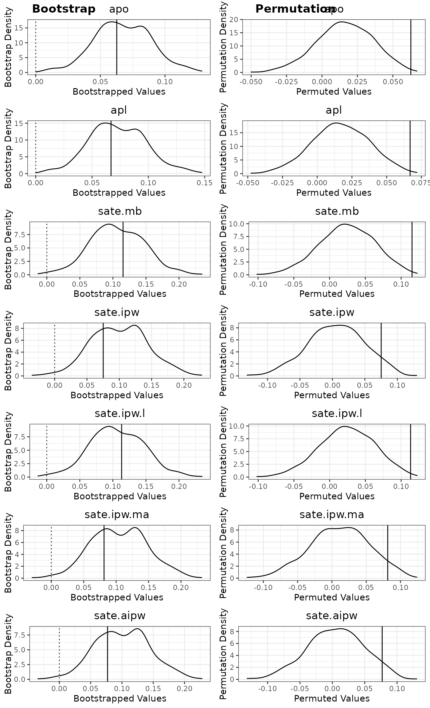
S3 Methods for Objects Returned by rain_attr()
The S3 object returned by the main function rain_attr is
of class rain_attr, which supports a wide range of common
S3 methods:
coef: computes the fixed effect coefficients and the EBLUPs of random intercepts if the selected model is a LMM, or the regression coefficients if the selected model is a GLM.print: Print point estimates of attributions and SATEs, along with additional information for the fitted upwind (first-stage) and downwind (second-stage) LMMs.residuals: Compute residuals of various types for the selected model.fittedCompute fitted values of the selected model.varcomp: Compute the random intercept variance and error variance for the different fitted LMMs.predict: Computed predictions using the selected model.plot: Plot the bootstrap and permutation distributions of attribution and SATE estimates. Alternatively, can also be used to obtain model diagnostic plots for the selected model.summary: Returns a list of summary statistics of the two-stage LMM approach, which is an object of classsummary.rain_attr. This object can be called to print the point estimates of attributions and SATE, along with their bootstrap confidence intervals, bootstrap p-values and permutation p-values if bootstrap and permutation has been performed.
We provide some example usage of these S3 methods below, noting that
most of these S3 methods require the selection of a model through the
argument model, which must be one of
“upwind_lmm”, “downwind_lmm” (default),
“downwind_target_lmm”, “downwind_control_lmm”,
“downwind_logistic”, or
“downwind_propensity”
Coefficients of the downwind (second-stage) LMM:
coef(boot_perm_result, model = 'downwind_lmm')$fixef_coef
#> (Intercept) Gauge.Elevation
#> 0.30782064 -0.19576293
#> Target.H.01 Target.H.02
#> 0.31568597 0.23977373
#> Target.H.03 Target.H.04
#> 0.23675150 -0.14009800
#> Target.H.05 Target.H.06
#> 0.41804072 -0.20023955
#> Target.H.07 Target.H.08
#> 0.23091236 0.07861614
#> Target.H.09 Target.H.10
#> 0.56479275 0.05267170
#> Gauge.Elevation:Target.H.01 Gauge.Elevation:Target.H.02
#> -0.13348185 -0.19775235
head(coef(boot_perm_result, model = 'downwind_lmm')$ranef_coef)
#> (Intercept)
#> 2013135 -0.191334499
#> 2013149 0.231232226
#> 2013150 0.841928530
#> 2013151 0.382101947
#> 2013152 -0.221780948
#> 2013157 -0.001806244Residuals of the upwind (first-stage) LMM:
head(residuals(boot_perm_result, model = 'upwind_lmm', residual_type = 'response', residual_scaled = T))
#> 1040 1826 1827 1830 1921 1954
#> -0.13134488 -1.37334048 1.98155739 -0.48260149 0.04352322 1.21770555Prediction using the downwind (second-stage) LMM, which consists of both the estimated fixed effects and the EBLUP of the random intercept:
#Predicting for these two observations:
oman[1:2,]
#> Year YearDay Month TrialDay Year...2013 Year...2014 Year...2015 Year...2016
#> 1 2013 135 5 2013135 1 0 0 0
#> 2 2013 135 5 2013135 1 0 0 0
#> Year...2017 Year...2018 H1on H2on H3on H4on H5on H6on H7on H8on H9on H10on
#> 1 0 0 1 0 NA NA NA NA NA NA NA NA
#> 2 0 0 1 0 NA NA NA NA NA NA NA NA
#> Gauge.ID Gauge.Latitude Gauge.Longitude Gauge.Elevation Elevated.Gauge
#> 1 1 22.79050 57.85393 0.479 0
#> 2 2 22.84042 57.87990 0.540 0
#> Gauge.Elevation...1km Gauge.Elevation...1km.1 Rain.Gauge.Measurement
#> 1 0.479 0 0
#> 2 0.540 0 0
#> Rainfall.Event Positive.Rainfall LogRain Rainfall.Measurement.Status
#> 1 0 NA NA Downwind
#> 2 0 NA NA Downwind
#> Target.H.01 Target.H.02 Target.H.03 Target.H.04 Target.H.05 Target.H.06
#> 1 0 0 0 0 0 0
#> 2 0 0 0 0 0 0
#> Target.H.07 Target.H.08 Target.H.09 Target.H.10 Gauge.Day.Type
#> 1 0 0 0 0 Control
#> 2 0 0 0 0 Control
#> Steering.Wind.Direction Steering.Wind.Principal.Direction Steering.Wind.Speed
#> 1 325 NNW 6.687778
#> 2 325 NNW 6.687778
#> Lifted.Index Total.Totals LCL.Pressure Precipitable.Water PC1.Dry.Temperature
#> 1 8.03 34.6 607.24 15.77 1.089538
#> 2 8.03 34.6 607.24 15.77 1.089538
#> PC2.Dry.Temperature PC1.Relative.Humidity PC2..Relative.Humidity
#> 1 3.045836 -2.183532 -2.494393
#> 2 3.045836 -2.183532 -2.494393
#> PC1.Ground.Level.Pressure
#> 1 0.4760997
#> 2 0.4760997
predict(boot_perm_result, newdata = oman[1:2,], model = 'downwind_lmm', re_include = TRUE, fixef_include = TRUE)
#> 1 2
#> 0.02271570 0.01077416Diagnostic plots for downwind (second-stage) LMM:
plot(boot_perm_result, plot_type = 'model', model = 'downwind_lmm')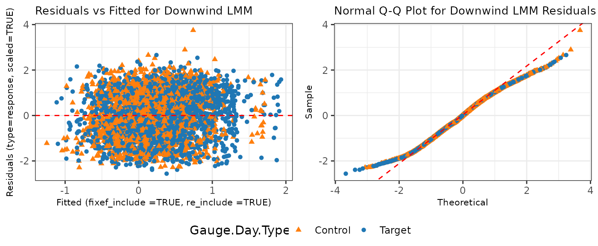
For more details on these S3 methods applicable to the
rain_attr class object as well as the returned value from
the summary method, we refer to
help("rain_attr-class").
eda() - Exploratory Data Analysis Plotting Function
The package also provide another function eda that
performs various exploratory data analyses (EDA) on gauge-day level
rainfall enhancement trial data, with the argument eda_type
controlling the type of EDA:
eda_type = num_obs_days: Compute contigency tables of the number of observations and number of unique days, with rows corresponding to different types of gauge-day observations, and columns corresponding to positive vs. zero rainfall events.eda_type = num_obs_days_by_year: Same aseda_type = num_obs_days, but computed separately for each year.eda_type = hist_day_group_sizes: Plot histograms of groups sizes for days with positive rainfall using different types of gauge-day observations.eda_type = qq_rain: Produce Normal Q-Q plots for positive rainfall values (raw or log-transformed) of different types of gauge-day observations.eda_type = ts_by_type: Plots daily average positive rainfall (raw or log-transformed) by types of gauge-day observations, facetted by year.eda_type = ts_by_gauge: Plots daily rainfall (raw or log-transformed) time series for each gauge, optionally highlighting a subset of gauges, with faceting by year.eda_type = ts_by_gauge_interactive: Interactive version ofeda_type = ts_by_gaugeusingplotly, with points showing gauge identifiers on hover.eda_type = map_static: Produce a spatial map of annual average positive rainfall (raw or log-transformed). Optional features include overlaying a polygon layer, adding elevation contour lines, and displaying ionizer locations.eda_type = map_dynamic: Produce an animated map of daily rainfall (raw or log-transformed). The animation can optionally be restricted to a specific year and may include a polygon overlay, elevation contour lines, and ionizer locations.
We provide some example usage of this eda function
below.
Contingency tables of rainfall events against type of gauge-day observations:
contigency_table = eda(eda_type = "num_obs_days",
data = oman,
day_column_name = 'TrialDay',
upwind_subset = Gauge.Day.Type == 'Upwind',
downwind_subset = Gauge.Day.Type %in% c('Target','Control'),
downwind_target_subset = Gauge.Day.Type == 'Target',
downwind_control_subset = Gauge.Day.Type == 'Control',
positive_subset = Rain.Gauge.Measurement > 0
)
contigency_table
#> $num_obs
#> Rain.Gauge.Measurement > 0
#> Gauge.Day.Type == "Upwind" 1545
#> Gauge.Day.Type %in% c("Target", "Control") 4168
#> Gauge.Day.Type == "Target" 2176
#> Gauge.Day.Type == "Control" 1992
#> !(Rain.Gauge.Measurement > 0)
#> Gauge.Day.Type == "Upwind" 29440
#> Gauge.Day.Type %in% c("Target", "Control") 39108
#> Gauge.Day.Type == "Target" 20939
#> Gauge.Day.Type == "Control" 18169
#>
#> $num_unique_days
#> Rain.Gauge.Measurement > 0
#> Gauge.Day.Type == "Upwind" 292
#> Gauge.Day.Type %in% c("Target", "Control") 488
#> Gauge.Day.Type == "Target" 407
#> Gauge.Day.Type == "Control" 404
#> !(Rain.Gauge.Measurement > 0)
#> Gauge.Day.Type == "Upwind" 740
#> Gauge.Day.Type %in% c("Target", "Control") 740
#> Gauge.Day.Type == "Target" 739
#> Gauge.Day.Type == "Control" 740Histogram of group sizes for each trial day with positive rainfall, i.e., the group size of one trial day is defined as the number of gauge-day observations within that day that recorded positive rainfall and satisfied the specific type of gauge-day observation (such as upwind or downwind):
hist_example = eda(eda_type = "hist_day_group_sizes",
data = oman,
day_column_name = 'TrialDay',
upwind_subset = Gauge.Day.Type == 'Upwind',
downwind_subset = Gauge.Day.Type %in% c('Target','Control'),
positive_subset = Rain.Gauge.Measurement > 0
)
hist_example
#> $upwind_positive_hist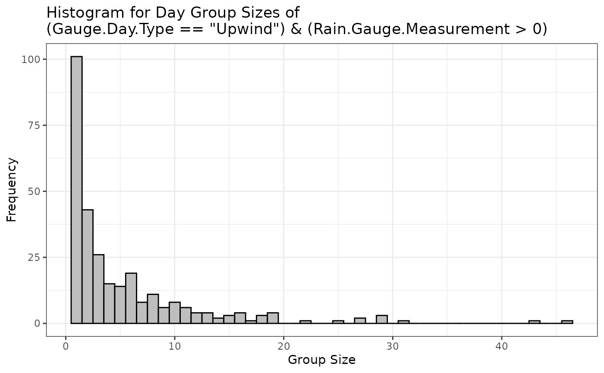
#>
#> $downwind_positive_hist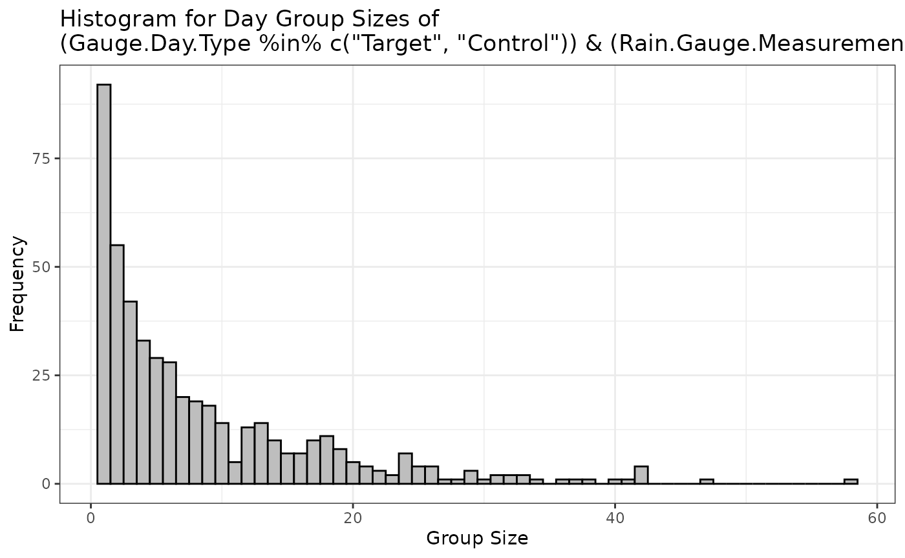
Daily rainfall (on log-scale) time series for each gauge, with the gauge at the lowest elevation highlighted:
daily_lograin_by_gauge = eda(eda_type = "ts_by_gauge",
data = oman,
rain_col_name = 'Rain.Gauge.Measurement',
day_column_name = 'TrialDay',
year_column_name = 'Year',
use_raw = FALSE,
gauge_id_column_name = 'Gauge.ID',
ts_focus_gauge = unique(oman$Gauge.ID[oman$Gauge.Elevation == min(oman$Gauge.Elevation)]))
daily_lograin_by_gauge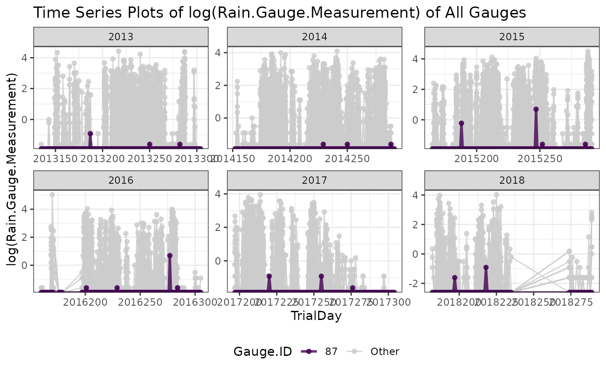
Spatial maps of annual average rainfall (on log scale) facetted by
year, with map polygon layer for Oman added using
input_sf = rnaturalearth::ne_countries(scale = "large", country = "Oman", returnclass = "sf"),
ionizer locations plotted using
ionizer_location_df = ionizer_location, and elevation
contour lines added using elev_contour = TRUE:
annual_map = eda(eda_type = "map_static",
data = oman,
rain_col_name = 'Rain.Gauge.Measurement',
day_column_name = 'TrialDay',
year_column_name = 'Year',
use_raw = F,
longlat_column_names = c("Gauge.Longitude", "Gauge.Latitude"),
long_lim = c(55,60),
lat_lim = c(22,25),
input_sf = rnaturalearth::ne_countries(scale = "large", country = "Oman", returnclass = "sf"),
ionizer_location_df = ionizer_location,
ionizer_id_column_name = 'Ionizer',
ionizer_longlat_column_names = c("Longitude","Latitude"),
elev_contour = TRUE,
elev_resolution = 2,
positive_subset = Rain.Gauge.Measurement > 0
)
#> Mosaicing & Projecting
#> Clipping DEM to bbox
#> Note: Elevation units are in meters.
annual_map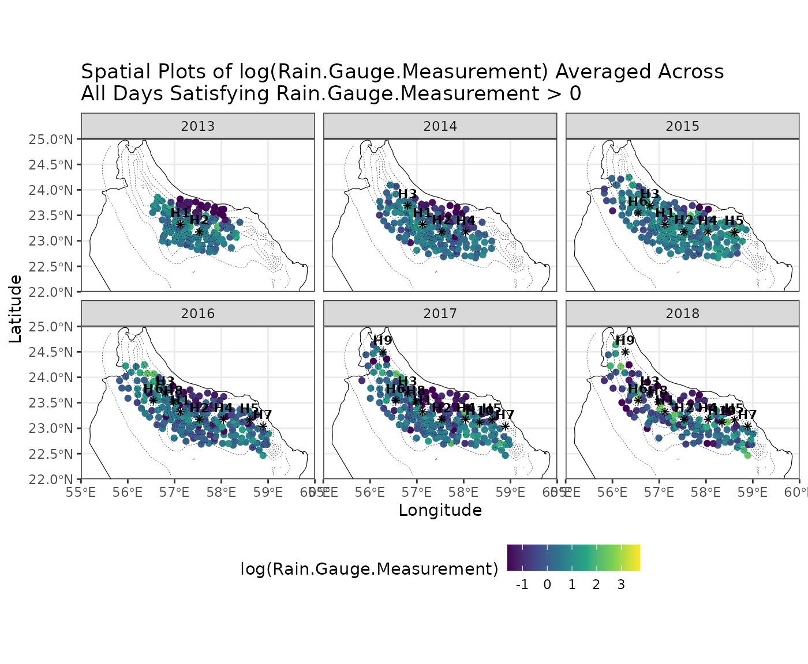
Animated map of daily rainfall (on log scale), with map polygon layer
for Oman added using
input_sf = rnaturalearth::ne_countries(scale = "large", country = "Oman", returnclass = "sf"),
ionizer locations plotted using
ionizer_location_df = ionizer_location, elevation contour
lines added using elev_contour = TRUE, and wind direction
arrows added using
wind_direction_column_name = "Steering.Wind.Direction"
along with wind speed supplied via
wind_speed_column_name = "Steering.Wind.Speed", noting that
long_lim = c(55,60) and lat_lim = c(20,25) are
used to ensure a square map is produced so that the wind arrow lengths
appear visually consistent across directions:
animated_map = eda(eda_type = "map_dynamic",
data = oman,
rain_col_name = 'Rain.Gauge.Measurement',
day_column_name = 'TrialDay',
year_column_name = 'Year',
use_raw = F,
longlat_column_names = c("Gauge.Longitude", "Gauge.Latitude"),
long_lim = c(55,60),
lat_lim = c(20,25),
input_sf = rnaturalearth::ne_countries(scale = "large", country = "Oman", returnclass = "sf"),
ionizer_location_df = ionizer_location,
ionizer_id_column_name = 'Ionizer',
ionizer_longlat_column_names = c("Longitude","Latitude"),
elev_contour = TRUE,
elev_resolution = 2,
wind_direction_column_name = "Steering.Wind.Direction",
wind_arrow_long_lat = c(59.25,24.5),
wind_speed_column_name = "Steering.Wind.Speed",
wind_speed_scaling = 0.075,
focus_year = c(2013),
fps = 30
)
#> Mosaicing & Projecting
#> Clipping DEM to bbox
#> Note: Elevation units are in meters.
animated_map$gif_image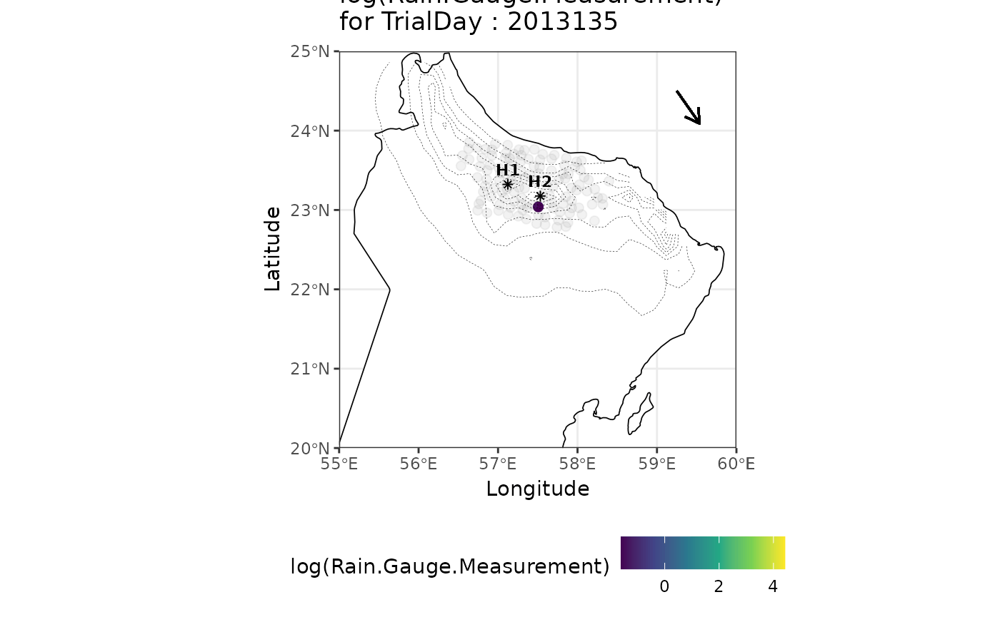
For more details on the eda function, we refer to
help(eda).
Datasets Included with RainAttr
The package also contains the following four datasets containing information for the 2013 – 2018 Oman rainfall enhancement trial, which were used in the analyses of Chambers, Beare, et al. (2022) and Chambers, Ranjbar, et al. (2022):
oman: contains gauge-day observations from the 2013 – 2018 Oman trial with 55 variables that could be used for the two-stage LMM modelling. Seehelp(oman)for more details.ionizer_location: contains the latitude and longitude of the ten ionizers and their deployment timing during the 2013 – 2018 Oman trial. Seehelp(ionizer_location)for more details.ionizer_operation: contains the daily operation schedule of the ionizers during the 2013 – 2018 Oman trial. Seehelp(ionizer_operation)for more details.gaugeday_downwind: contains binary indicators of whether each gauge-day observation (in theomandataset) is downwind of each ionizer during the 2013 – 2018 Oman trial. Seehelp(gaugeday_downwind)for more details.
Replicating the Attribution Analysis of Chambers, Beare, et al. (2022)
The package can be used to replicate the apl attribution
analysis of Chambers, Beare, et al.
(2022), published in International Statistical Review, “Nudging a
Pseudo-Science Towards a Science - The Role of Statistics in a Rainfall
Enhancement Trial in Oman”, noting that this paper focused on the
apl attribution.
Headline Statistical Analysis in Section 5.1 of Chambers, Beare, et al. (2022)
The headline analysis presented in Section 5.1 can be reproduced
using the code below. Note that Chambers, Beare,
et al. (2022) used the unconditional fitted value from upwind
(first-stage) model (instr_pred_type = 'Unconditional'),
estimated the attribution apl using their proposed method
(attr_type = 'ChambersEtAl'), and made use of the REB2 type
bootstrap (bootstrap_opt(bootstrap_type = 'REB2')). See
help(rain_attr) and help(bootstrap_downwind)
for further details on the attr_type = 'ChambersEtAl'
attribution estimator and the REB2 type bootstrap, respectively.
Moreover, the unconditional fitted value from upwind (first-stage) model
is included as a covariate in the RHS of the
downwind_lmm_formula, instead of an offset term in the LHS
of the downwind_lmm_formula.
headline = rain_attr(
data = oman,
upwind_lmm_formula = LogRain ~ Gauge.Elevation + Steering.Wind.Speed + Total.Totals + PC2.Dry.Temperature + PC1.Relative.Humidity + PC1.Ground.Level.Pressure + (1|TrialDay),
instr_pred_name = 'natural_pred',
instr_pred_type = 'Unconditional',
downwind_lmm_formula = LogRain ~ Gauge.Elevation + natural_pred + Target.H.01 + Target.H.02 + Target.H.03 + Target.H.04 + Target.H.05 + Target.H.06 + Target.H.07 + Target.H.08 + Target.H.09 + Target.H.10 + Gauge.Elevation:Target.H.01 + Gauge.Elevation:Target.H.02 + (1|TrialDay),
downwind_logistic_formula = (Rain.Gauge.Measurement > 0) ~ Gauge.Elevation + natural_pred + Target.H.01 + Target.H.02 + Target.H.03 + Target.H.04 + Target.H.05 + Target.H.06 + Target.H.07 + Target.H.08 + Target.H.09 + Target.H.10 + Gauge.Elevation:Target.H.01 + Gauge.Elevation:Target.H.02,
downwind_propensity_formula = (Gauge.Day.Type == 'Target') ~ Total.Totals + PC1.Dry.Temperature + PC1.Relative.Humidity + PC1.Ground.Level.Pressure,
rain_col_name = 'Rain.Gauge.Measurement',
upwind_subset = Gauge.Day.Type == 'Upwind',
downwind_subset = Gauge.Day.Type %in% c('Target','Control'),
downwind_target_subset = Gauge.Day.Type == 'Target',
downwind_control_subset = Gauge.Day.Type == 'Control',
positive_subset = Rain.Gauge.Measurement > 0,
attr_type = 'ChambersEtAl',
x_downwind_name = c('Gauge.Elevation', 'natural_pred'),
bootstrap = TRUE,
bootstrap_option = bootstrap_opt(B_bootstrap = 500,
bootstrap_type = 'REB2',
bootstrap_seed = 1,
bootstrap_parallel = TRUE,
bootstrap_parallel_num_worker = n_workers),
permutation = TRUE,
permutation_option = permutation_opt(B_permutation = 500,
permutation_seed = 321,
permutation_parallel = TRUE,
permutation_parallel_num_worker = n_workers)
)Table 3 and 4, which are identical to the following summary tables of upwind (first-stage) and downwind (second-stage) LMM, respectively:
summary(headline)
#> Summary of Two Stage LMM Rainfall Enhancement Analysis
#> ======================================================================
#>
#> Attribution Results (Assuming Log-Rainfall being Modelled):
#> Estimate 95% Bootstrap CI Bootstrap P-Val Permutation P-Val
#> apo 11.12% (7.6667%, 14.82%) 0*** 0***
#> apl 12.51% (8.5784%, 16.97%) 0*** 0***
#> ---
#> Signif. codes: 0 '***' 0.001 '**' 0.01 '*' 0.05 '.' 0.1 ' ' 1
#>
#> SATE Results:
#> Estimate 95% Bootstrap CI Bootstrap P-Val Permutation P-Val
#> sate.mb 0.1144 (0.0533, 0.1779) 0*** 0.02*
#> sate.ipw 0.0740 (-0.012, 0.1653) 0.05. 0.07.
#> sate.ipw.l 0.1123 (0.0514, 0.1756) 0*** 0.02*
#> sate.ipw.ma 0.0654 (-0.0183, 0.1589) 0.06. 0.08.
#> sate.aipw 0.0774 (-0.0089, 0.1689) 0.04* 0.06.
#> ---
#> Signif. codes: 0 '***' 0.001 '**' 0.01 '*' 0.05 '.' 0.1 ' ' 1
#>
#>
#> ======================================================================
#>
#> Upwind (First Stage) LMM:
#> Formula:
#> LogRain ~ Gauge.Elevation + Steering.Wind.Speed + Total.Totals +
#> PC2.Dry.Temperature + PC1.Relative.Humidity + PC1.Ground.Level.Pressure +
#> (1 | TrialDay)
#>
#> Data subset used: oman [ Gauge.Day.Type == "Upwind" & Rain.Gauge.Measurement > 0 , ]
#> Number of observations: 1545, Number of groups: 292
#>
#> Random effects:
#> Groups Name Variance
#> TrialDay (Intercept) 0.4158771
#> Residual 1.6003327
#>
#> Fixed effects:
#> Estimate Std. Error t value
#> (Intercept) -1.4397 0.3988 -3.6104
#> Gauge.Elevation 0.4340 0.0740 5.8631
#> Steering.Wind.Speed -0.0964 0.0204 -4.7277
#> Total.Totals 0.0327 0.0083 3.9204
#> PC2.Dry.Temperature 0.1448 0.0527 2.7454
#> PC1.Relative.Humidity 0.1779 0.0223 7.9681
#> PC1.Ground.Level.Pressure -0.0523 0.0201 -2.6041
#>
#> ======================================================================
#>
#> Downwind (Second Stage) LMM:
#> Formula:
#> LogRain ~ Gauge.Elevation + natural_pred + Target.H.01 + Target.H.02 +
#> Target.H.03 + Target.H.04 + Target.H.05 + Target.H.06 + Target.H.07 +
#> Target.H.08 + Target.H.09 + Target.H.10 + Gauge.Elevation:Target.H.01 +
#> Gauge.Elevation:Target.H.02 + (1 | TrialDay)
#>
#> Data subset used: oman [ Gauge.Day.Type %in% c("Target", "Control") & Rain.Gauge.Measurement > 0 , ]
#> Number of observations: 4168, Number of groups: 488
#>
#> Random effects:
#> Groups Name Variance
#> TrialDay (Intercept) 0.2737032
#> Residual 1.8558029
#>
#> Fixed effects:
#> Estimate Std. Error t value
#> (Intercept) 0.2797 0.0642 4.3603
#> Gauge.Elevation -0.1250 0.0657 -1.9034
#> natural_pred 0.8557 0.0581 14.7335
#> Target.H.01 0.2892 0.1361 2.1244
#> Target.H.02 0.2576 0.1236 2.0837
#> Target.H.03 0.2382 0.0925 2.5761
#> Target.H.04 -0.1527 0.0889 -1.7172
#> Target.H.05 0.4325 0.1318 3.2819
#> Target.H.06 -0.2033 0.1492 -1.3624
#> Target.H.07 0.2220 0.1875 1.1842
#> Target.H.08 0.0585 0.1273 0.4595
#> Target.H.09 0.4815 0.3058 1.5744
#> Target.H.10 0.0344 0.1675 0.2057
#> Gauge.Elevation:Target.H.01 -0.0866 0.1437 -0.6029
#> Gauge.Elevation:Target.H.02 -0.2166 0.1196 -1.8115Chambers, Beare, et al. (2022) reported
a 95% bootstrap CI for apl in Section 5.1 as
(10.10%,23.09%), based on 10000 bootstrap replicates, with a bootstrap
p-value of less than 0.0001. In addition, they also reported a
permutation p-value of 0.0007. Our bootstrap and permutation results for
apl presented below differ for several reasons:
The inherent of the bootstrap and permutation procedure, as well as the smaller number of bootstrap and permutation replicates used here (
bootstrap_opt(B_bootstrap = 500)andpermutation_opt(B_permutation = 500)) to reduce computational costMore importantly, the original implementation of the
aplestimator in Chambers, Beare, et al. (2022) contained a coding error, which has been corrected in the present implementation.
summary(headline)$attr_table[2,]
#> Estimate 95% Bootstrap CI Bootstrap P-Val Permutation P-Val
#> apl 12.51% (8.5784%, 16.97%) 0 0The following plots aim to replicate Figure 7, noting that some differences remain due to the same reasons outlined above.
headline$bootstrap_plot_result$hatattr$apl + ggplot2::ggtitle('Bootstrap Distribution of Attribution\n (% Natural Rainfall)') + ggplot2::theme(plot.title = ggplot2::element_text(hjust = 0.5))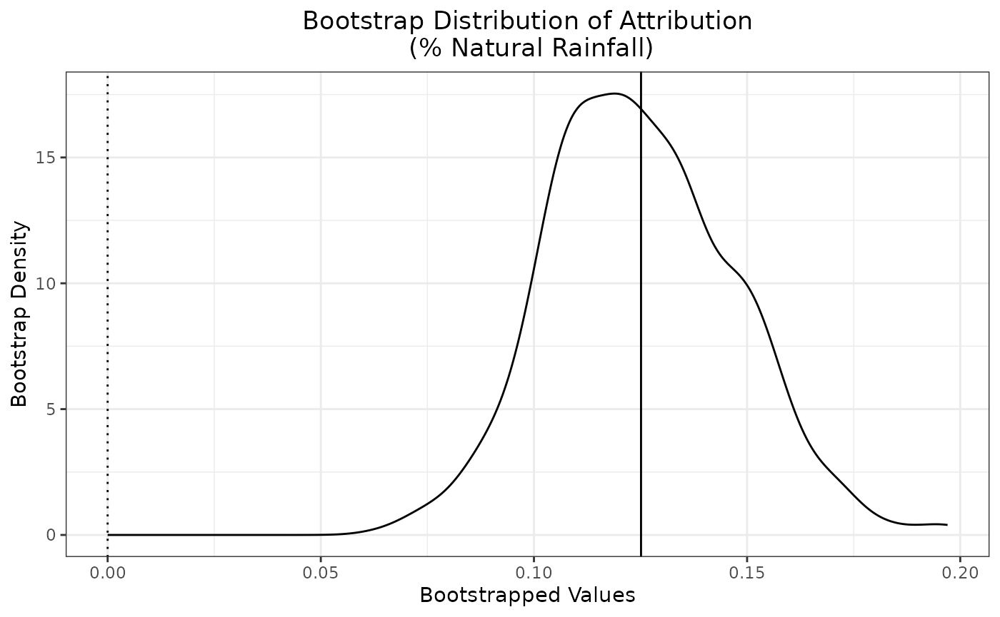
headline$permutation_plot_result$hatattr$apl + ggplot2::ggtitle('Permutation Distribution of Attribution\n (% Natural Rainfall)') + ggplot2::theme(plot.title = ggplot2::element_text(hjust = 0.5))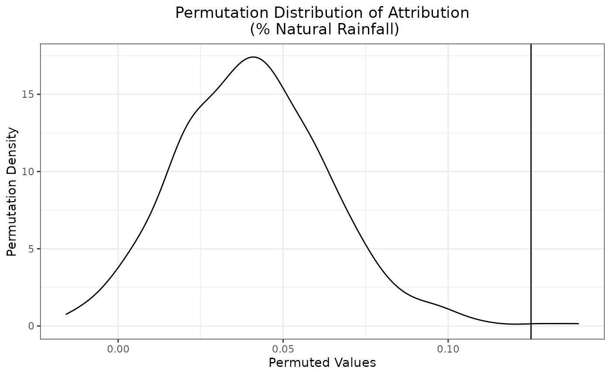
After the Event Statistical Analyses in Section 5.2 of Chambers, Beare, et al. (2022)
The after the event statistical analyses presented in Section 5.2 can also be replicated using the package. In particular, these analyses correspond to the three columns in Table 6: 2013-2018, 2013-2015, 2016-2018.
In the following, we replicate the parameter estimates and associated
t-values for the downwind (second-stage) LMM presented in each column of
Table 6, noting that the apl attribution estimates (except
for the 2016-2018 column) differ due to the aforementioned coding error
in the original implementation.
2013-2018 column:
#2013-2018 column
table6_2013_2018 = rain_attr(
data = oman,
upwind_lmm_formula = LogRain ~ Year...2014 + Year...2016 + Year...2017 + Year...2018 + Gauge.Elevation...1km + Gauge.Elevation...1km.1 + Steering.Wind.Speed + Total.Totals + PC2.Dry.Temperature + PC1.Relative.Humidity + PC1.Ground.Level.Pressure + (1|TrialDay),
instr_pred_name = 'natural_pred',
instr_pred_type = 'Unconditional',
downwind_lmm_formula = LogRain ~ Year...2013 + Year...2014 + Year...2016 + Year...2017 + Year...2018 + Gauge.Elevation...1km + Gauge.Elevation...1km.1 + natural_pred + Target.H.01 + Target.H.02 + Target.H.03 + Target.H.04 + Target.H.05 + Target.H.06 + Target.H.07 + Target.H.08 + Target.H.09 + Target.H.10 + Gauge.Elevation...1km:Target.H.01 + Gauge.Elevation...1km:Target.H.02 + Gauge.Elevation...1km.1:Target.H.01 + Gauge.Elevation...1km.1:Target.H.02 + (1|TrialDay),
downwind_logistic_formula = (Rain.Gauge.Measurement > 0) ~ Year...2013 + Year...2014 + Year...2016 + Year...2017 + Year...2018 + Gauge.Elevation...1km + Gauge.Elevation...1km.1 + natural_pred + Target.H.01 + Target.H.02 + Target.H.03 + Target.H.04 + Target.H.05 + Target.H.06 + Target.H.07 + Target.H.08 + Target.H.09 + Target.H.10 + Gauge.Elevation...1km:Target.H.01 + Gauge.Elevation...1km:Target.H.02 + Gauge.Elevation...1km.1:Target.H.01 + Gauge.Elevation...1km.1:Target.H.02,
downwind_propensity_formula = (Gauge.Day.Type == 'Target') ~ Year...2013 + Year...2014 + Year...2016 + Year...2017 + Year...2018 + Gauge.Elevation...1km + Gauge.Elevation...1km.1 + Steering.Wind.Speed + Total.Totals + PC2.Dry.Temperature + PC1.Relative.Humidity + PC1.Ground.Level.Pressure,
rain_col_name = 'Rain.Gauge.Measurement',
upwind_subset = Gauge.Day.Type == 'Upwind' & Year != 2013,
downwind_subset = Gauge.Day.Type %in% c('Target','Control'),
downwind_target_subset = Gauge.Day.Type == 'Target',
downwind_control_subset = Gauge.Day.Type == 'Control',
positive_subset = Rain.Gauge.Measurement > 0,
attr_type = 'ChambersEtAl',
x_downwind_name = c('Year...2013' , 'Year...2014' , 'Year...2016' , 'Year...2017' , 'Year...2018' , 'Gauge.Elevation...1km' , 'Gauge.Elevation...1km.1' , 'natural_pred'),
bootstrap = TRUE,
bootstrap_option = bootstrap_opt(B_bootstrap = 500,
bootstrap_type = 'REB2',
bootstrap_seed = 11,
bootstrap_parallel = TRUE,
bootstrap_parallel_num_worker = n_workers),
permutation = TRUE,
permutation_option = permutation_opt(B_permutation = 500,
permutation_seed = 3211,
permutation_parallel = TRUE,
permutation_parallel_num_worker = n_workers)
)
summary(table6_2013_2018)
#> Summary of Two Stage LMM Rainfall Enhancement Analysis
#> ======================================================================
#>
#> Attribution Results (Assuming Log-Rainfall being Modelled):
#> Estimate 95% Bootstrap CI Bootstrap P-Val Permutation P-Val
#> apo 12.29% (8.9847%, 16.09%) 0*** 0***
#> apl 14.01% (10.1853%, 18.66%) 0*** 0***
#> ---
#> Signif. codes: 0 '***' 0.001 '**' 0.01 '*' 0.05 '.' 0.1 ' ' 1
#>
#> SATE Results:
#> Estimate 95% Bootstrap CI Bootstrap P-Val Permutation P-Val
#> sate.mb 0.1259 (0.0669, 0.1849) 0*** 0.01*
#> sate.ipw 0.0821 (0.0023, 0.1683) 0.02* 0.12
#> sate.ipw.l 0.1229 (0.0658, 0.1819) 0*** 0.01*
#> sate.ipw.ma 0.0828 (0.0033, 0.1692) 0.02* 0.12
#> sate.aipw 0.0842 (0.0035, 0.1686) 0.02* 0.12
#> ---
#> Signif. codes: 0 '***' 0.001 '**' 0.01 '*' 0.05 '.' 0.1 ' ' 1
#>
#>
#> ======================================================================
#>
#> Upwind (First Stage) LMM:
#> Formula:
#> LogRain ~ Year...2014 + Year...2016 + Year...2017 + Year...2018 +
#> Gauge.Elevation...1km + Gauge.Elevation...1km.1 + Steering.Wind.Speed +
#> Total.Totals + PC2.Dry.Temperature + PC1.Relative.Humidity +
#> PC1.Ground.Level.Pressure + (1 | TrialDay)
#>
#> Data subset used: oman [ Gauge.Day.Type == "Upwind" & Year != 2013 & Rain.Gauge.Measurement > 0 , ]
#> Number of observations: 1316, Number of groups: 237
#>
#> Random effects:
#> Groups Name Variance
#> TrialDay (Intercept) 0.3616803
#> Residual 1.5560159
#>
#> Fixed effects:
#> Estimate Std. Error t value
#> (Intercept) -2.0845 0.4633 -4.4987
#> Year...2014 -0.1249 0.1784 -0.7003
#> Year...2016 -0.2848 0.1809 -1.5745
#> Year...2017 -0.2850 0.1889 -1.5089
#> Year...2018 -0.3501 0.2146 -1.6310
#> Gauge.Elevation...1km 0.8657 0.1952 4.4351
#> Gauge.Elevation...1km.1 0.4223 0.0938 4.5024
#> Steering.Wind.Speed -0.0615 0.0230 -2.6746
#> Total.Totals 0.0421 0.0095 4.4317
#> PC2.Dry.Temperature 0.1190 0.0545 2.1856
#> PC1.Relative.Humidity 0.1634 0.0227 7.1913
#> PC1.Ground.Level.Pressure -0.0411 0.0207 -1.9838
#>
#> ======================================================================
#>
#> Downwind (Second Stage) LMM:
#> Formula:
#> LogRain ~ Year...2013 + Year...2014 + Year...2016 + Year...2017 +
#> Year...2018 + Gauge.Elevation...1km + Gauge.Elevation...1km.1 +
#> natural_pred + Target.H.01 + Target.H.02 + Target.H.03 +
#> Target.H.04 + Target.H.05 + Target.H.06 + Target.H.07 + Target.H.08 +
#> Target.H.09 + Target.H.10 + Gauge.Elevation...1km:Target.H.01 +
#> Gauge.Elevation...1km:Target.H.02 + Gauge.Elevation...1km.1:Target.H.01 +
#> Gauge.Elevation...1km.1:Target.H.02 + (1 | TrialDay)
#>
#> Data subset used: oman [ Gauge.Day.Type %in% c("Target", "Control") & Rain.Gauge.Measurement > 0 , ]
#> Number of observations: 4168, Number of groups: 488
#>
#> Random effects:
#> Groups Name Variance
#> TrialDay (Intercept) 0.2251801
#> Residual 1.8529757
#>
#> Fixed effects:
#> Estimate Std. Error t value
#> (Intercept) 0.0765 0.1208 0.6332
#> Year...2013 0.4058 0.1132 3.5834
#> Year...2014 0.3357 0.1064 3.1554
#> Year...2016 0.2586 0.1153 2.2430
#> Year...2017 0.0923 0.1192 0.7743
#> Year...2018 0.0405 0.1463 0.2770
#> Gauge.Elevation...1km -0.1996 0.1640 -1.2174
#> Gauge.Elevation...1km.1 -0.0962 0.0709 -1.3577
#> natural_pred 0.9451 0.0591 15.9968
#> Target.H.01 0.4807 0.2470 1.9463
#> Target.H.02 0.8403 0.2930 2.8680
#> Target.H.03 0.2411 0.0922 2.6142
#> Target.H.04 -0.1140 0.0888 -1.2837
#> Target.H.05 0.4992 0.1317 3.7904
#> Target.H.06 -0.1364 0.1489 -0.9164
#> Target.H.07 0.3355 0.1879 1.7859
#> Target.H.08 0.1315 0.1284 1.0239
#> Target.H.09 0.7113 0.3065 2.3206
#> Target.H.10 0.1955 0.1700 1.1499
#> Gauge.Elevation...1km:Target.H.01 -0.4878 0.3634 -1.3423
#> Gauge.Elevation...1km:Target.H.02 -1.2718 0.4685 -2.7147
#> Gauge.Elevation...1km.1:Target.H.01 -0.1627 0.1585 -1.0261
#> Gauge.Elevation...1km.1:Target.H.02 -0.4583 0.1718 -2.66832013-2015 column:
#2013-2015 column
table6_2013_2015 = rain_attr(
data = oman,
upwind_lmm_formula = LogRain ~ Year...2014 + Gauge.Elevation...1km + Gauge.Elevation...1km.1 + Steering.Wind.Speed + Total.Totals + PC2.Dry.Temperature + PC1.Relative.Humidity + PC1.Ground.Level.Pressure + (1|TrialDay),
instr_pred_name = 'natural_pred',
instr_pred_type = 'Unconditional',
downwind_lmm_formula = LogRain ~ Year...2013 + Year...2014 + Gauge.Elevation...1km + Gauge.Elevation...1km.1 + natural_pred + Target.H.01 + Target.H.02 + Target.H.03 + Target.H.04 + Target.H.05 + Target.H.06 + Gauge.Elevation...1km:Target.H.01 + Gauge.Elevation...1km:Target.H.02 + Gauge.Elevation...1km.1:Target.H.01 + Gauge.Elevation...1km.1:Target.H.02 + (1|TrialDay),
downwind_logistic_formula = (Rain.Gauge.Measurement > 0) ~ Year...2013 + Year...2014 + Gauge.Elevation...1km + Gauge.Elevation...1km.1 + natural_pred + Target.H.01 + Target.H.02 + Target.H.03 + Target.H.04 + Target.H.05 + Target.H.06 + Gauge.Elevation...1km:Target.H.01 + Gauge.Elevation...1km:Target.H.02 + Gauge.Elevation...1km.1:Target.H.01 + Gauge.Elevation...1km.1:Target.H.02,
downwind_propensity_formula = (Gauge.Day.Type == 'Target') ~ Year...2013 + Year...2014 + Gauge.Elevation...1km + Gauge.Elevation...1km.1 + Steering.Wind.Speed + Total.Totals + PC2.Dry.Temperature + PC1.Relative.Humidity + PC1.Ground.Level.Pressure,
rain_col_name = 'Rain.Gauge.Measurement',
upwind_subset = Gauge.Day.Type == 'Upwind' & Year %in% 2014:2015,
downwind_subset = Gauge.Day.Type %in% c('Target','Control') & Year %in% 2013:2015,
downwind_target_subset = Gauge.Day.Type == 'Target',
downwind_control_subset = Gauge.Day.Type == 'Control',
positive_subset = Rain.Gauge.Measurement > 0,
attr_type = 'ChambersEtAl',
x_downwind_name = c('Year...2013' , 'Year...2014' , 'Gauge.Elevation...1km' , 'Gauge.Elevation...1km.1' , 'natural_pred'),
bootstrap = TRUE,
bootstrap_option = bootstrap_opt(B_bootstrap = 500,
bootstrap_type = 'REB2',
bootstrap_seed = 199,
bootstrap_parallel = TRUE,
bootstrap_parallel_num_worker = n_workers),
permutation = TRUE,
permutation_option = permutation_opt(B_permutation = 500,
permutation_seed = 3210,
permutation_parallel = TRUE,
permutation_parallel_num_worker = n_workers)
)
summary(table6_2013_2015)
#> Summary of Two Stage LMM Rainfall Enhancement Analysis
#> ======================================================================
#>
#> Attribution Results (Assuming Log-Rainfall being Modelled):
#> Estimate 95% Bootstrap CI Bootstrap P-Val Permutation P-Val
#> apo 13% (8.1945%, 17.96%) 0*** 0***
#> apl 14.94% (9.3628%, 21.17%) 0*** 0***
#> ---
#> Signif. codes: 0 '***' 0.001 '**' 0.01 '*' 0.05 '.' 0.1 ' ' 1
#>
#> SATE Results:
#> Estimate 95% Bootstrap CI Bootstrap P-Val Permutation P-Val
#> sate.mb 0.1035 (0.0228, 0.1851) 0.01* 0.01*
#> sate.ipw 0.0460 (-0.0604, 0.1535) 0.21 0.25
#> sate.ipw.l 0.1063 (0.0228, 0.1886) 0.01* 0.01*
#> sate.ipw.ma 0.0463 (-0.06, 0.1527) 0.21 0.25
#> sate.aipw 0.0550 (-0.0524, 0.1613) 0.17 0.19
#> ---
#> Signif. codes: 0 '***' 0.001 '**' 0.01 '*' 0.05 '.' 0.1 ' ' 1
#>
#>
#> ======================================================================
#>
#> Upwind (First Stage) LMM:
#> Formula:
#> LogRain ~ Year...2014 + Gauge.Elevation...1km + Gauge.Elevation...1km.1 +
#> Steering.Wind.Speed + Total.Totals + PC2.Dry.Temperature +
#> PC1.Relative.Humidity + PC1.Ground.Level.Pressure + (1 |
#> TrialDay)
#>
#> Data subset used: oman [ Gauge.Day.Type == "Upwind" & Year %in% 2014:2015 & Rain.Gauge.Measurement > 0 , ]
#> Number of observations: 812, Number of groups: 119
#>
#> Random effects:
#> Groups Name Variance
#> TrialDay (Intercept) 0.3962586
#> Residual 1.5939318
#>
#> Fixed effects:
#> Estimate Std. Error t value
#> (Intercept) -1.9840 0.6854 -2.8947
#> Year...2014 -0.0053 0.1937 -0.0272
#> Gauge.Elevation...1km 0.8004 0.2503 3.1975
#> Gauge.Elevation...1km.1 0.5012 0.1228 4.0816
#> Steering.Wind.Speed -0.0763 0.0371 -2.0596
#> Total.Totals 0.0392 0.0146 2.6912
#> PC2.Dry.Temperature 0.1109 0.0849 1.3061
#> PC1.Relative.Humidity 0.2185 0.0337 6.4880
#> PC1.Ground.Level.Pressure -0.0697 0.0329 -2.1161
#>
#> ======================================================================
#>
#> Downwind (Second Stage) LMM:
#> Formula:
#> LogRain ~ Year...2013 + Year...2014 + Gauge.Elevation...1km +
#> Gauge.Elevation...1km.1 + natural_pred + Target.H.01 + Target.H.02 +
#> Target.H.03 + Target.H.04 + Target.H.05 + Target.H.06 + Gauge.Elevation...1km:Target.H.01 +
#> Gauge.Elevation...1km:Target.H.02 + Gauge.Elevation...1km.1:Target.H.01 +
#> Gauge.Elevation...1km.1:Target.H.02 + (1 | TrialDay)
#>
#> Data subset used: oman [ Gauge.Day.Type %in% c("Target", "Control") & Year %in% 2013:2015 & Rain.Gauge.Measurement > 0 , ]
#> Number of observations: 2447, Number of groups: 286
#>
#> Random effects:
#> Groups Name Variance
#> TrialDay (Intercept) 0.240069
#> Residual 1.848236
#>
#> Fixed effects:
#> Estimate Std. Error t value
#> (Intercept) 0.0235 0.1515 0.1550
#> Year...2013 0.4771 0.1187 4.0179
#> Year...2014 0.2732 0.1093 2.5010
#> Gauge.Elevation...1km -0.0608 0.2193 -0.2772
#> Gauge.Elevation...1km.1 -0.0846 0.0983 -0.8611
#> natural_pred 0.8833 0.0724 12.2056
#> Target.H.01 0.5486 0.3020 1.8166
#> Target.H.02 0.9486 0.3633 2.6109
#> Target.H.03 0.4130 0.1255 3.2906
#> Target.H.04 -0.1664 0.1211 -1.3741
#> Target.H.05 0.7042 0.2308 3.0516
#> Target.H.06 -0.3491 0.2250 -1.5517
#> Gauge.Elevation...1km:Target.H.01 -0.5988 0.4348 -1.3773
#> Gauge.Elevation...1km:Target.H.02 -1.3498 0.5839 -2.3117
#> Gauge.Elevation...1km.1:Target.H.01 -0.3531 0.1903 -1.8555
#> Gauge.Elevation...1km.1:Target.H.02 -0.5763 0.2152 -2.67792016-2018 column:
#2016-2018 column
table6_2016_2018 = rain_attr(
data = oman,
upwind_lmm_formula = LogRain ~ Year...2016 + Year...2018 + Gauge.Elevation...1km + Gauge.Elevation...1km.1 + Steering.Wind.Speed + Total.Totals + PC2.Dry.Temperature + PC1.Relative.Humidity + PC1.Ground.Level.Pressure + (1|TrialDay),
instr_pred_name = 'natural_pred',
instr_pred_type = 'Unconditional',
downwind_lmm_formula = LogRain ~ Year...2016 + Year...2018 + Gauge.Elevation...1km + Gauge.Elevation...1km.1 + natural_pred + Target.H.01 + Target.H.02 + Target.H.03 + Target.H.04 + Target.H.05 + Target.H.06 + Target.H.07 + Target.H.08 + Target.H.09 + Target.H.10 + (1|TrialDay),
downwind_logistic_formula = (Rain.Gauge.Measurement > 0) ~ Year...2016 + Year...2018 + Gauge.Elevation...1km + Gauge.Elevation...1km.1 + natural_pred + Target.H.01 + Target.H.02 + Target.H.03 + Target.H.04 + Target.H.05 + Target.H.06 + Target.H.07 + Target.H.08 + Target.H.09 + Target.H.10,
downwind_propensity_formula = (Gauge.Day.Type == 'Target') ~ Year...2016 + Year...2018 + Gauge.Elevation...1km + Gauge.Elevation...1km.1 + Steering.Wind.Speed + Total.Totals + PC2.Dry.Temperature + PC1.Relative.Humidity + PC1.Ground.Level.Pressure,
rain_col_name = 'Rain.Gauge.Measurement',
upwind_subset = Gauge.Day.Type == 'Upwind' & Year %in% 2016:2018,
downwind_subset = Gauge.Day.Type %in% c('Target','Control') & Year %in% 2016:2018,
downwind_target_subset = Gauge.Day.Type == 'Target',
downwind_control_subset = Gauge.Day.Type == 'Control',
positive_subset = Rain.Gauge.Measurement > 0,
attr_type = 'ChambersEtAl',
x_downwind_name = c('Year...2016' , 'Year...2018' , 'Gauge.Elevation...1km' , 'Gauge.Elevation...1km.1' , 'natural_pred'),
bootstrap = TRUE,
bootstrap_option = bootstrap_opt(B_bootstrap = 500,
bootstrap_type = 'REB2',
bootstrap_seed = 91,
bootstrap_parallel = TRUE,
bootstrap_parallel_num_worker = n_workers),
permutation = TRUE,
permutation_option = permutation_opt(B_permutation = 500,
permutation_seed = 9321,
permutation_parallel = TRUE,
permutation_parallel_num_worker = n_workers)
)
summary(table6_2016_2018)
#> Summary of Two Stage LMM Rainfall Enhancement Analysis
#> ======================================================================
#>
#> Attribution Results (Assuming Log-Rainfall being Modelled):
#> Estimate 95% Bootstrap CI Bootstrap P-Val Permutation P-Val
#> apo 14.66% (9.0013%, 20.84%) 0*** 0***
#> apl 17.18% (10.4577%, 25.28%) 0*** 0***
#> ---
#> Signif. codes: 0 '***' 0.001 '**' 0.01 '*' 0.05 '.' 0.1 ' ' 1
#>
#> SATE Results:
#> Estimate 95% Bootstrap CI Bootstrap P-Val Permutation P-Val
#> sate.mb 0.1565 (0.062, 0.2427) 0*** 0***
#> sate.ipw 0.1243 (-0.0025, 0.2364) 0.03* 0***
#> sate.ipw.l 0.1540 (0.0608, 0.2397) 0*** 0***
#> sate.ipw.ma 0.1260 (-6e-04, 0.2366) 0.03* 0***
#> sate.aipw 0.1219 (-0.0074, 0.2352) 0.03* 0***
#> ---
#> Signif. codes: 0 '***' 0.001 '**' 0.01 '*' 0.05 '.' 0.1 ' ' 1
#>
#>
#> ======================================================================
#>
#> Upwind (First Stage) LMM:
#> Formula:
#> LogRain ~ Year...2016 + Year...2018 + Gauge.Elevation...1km +
#> Gauge.Elevation...1km.1 + Steering.Wind.Speed + Total.Totals +
#> PC2.Dry.Temperature + PC1.Relative.Humidity + PC1.Ground.Level.Pressure +
#> (1 | TrialDay)
#>
#> Data subset used: oman [ Gauge.Day.Type == "Upwind" & Year %in% 2016:2018 & Rain.Gauge.Measurement > 0 , ]
#> Number of observations: 504, Number of groups: 118
#>
#> Random effects:
#> Groups Name Variance
#> TrialDay (Intercept) 0.333196
#> Residual 1.479642
#>
#> Fixed effects:
#> Estimate Std. Error t value
#> (Intercept) -2.4233 0.5827 -4.1586
#> Year...2016 -0.0407 0.2151 -0.1893
#> Year...2018 -0.1528 0.2491 -0.6136
#> Gauge.Elevation...1km 0.9440 0.3119 3.0267
#> Gauge.Elevation...1km.1 0.3279 0.1451 2.2607
#> Steering.Wind.Speed -0.0474 0.0301 -1.5747
#> Total.Totals 0.0437 0.0126 3.4609
#> PC2.Dry.Temperature 0.1144 0.0724 1.5804
#> PC1.Relative.Humidity 0.1015 0.0332 3.0588
#> PC1.Ground.Level.Pressure -0.0350 0.0271 -1.2904
#>
#> ======================================================================
#>
#> Downwind (Second Stage) LMM:
#> Formula:
#> LogRain ~ Year...2016 + Year...2018 + Gauge.Elevation...1km +
#> Gauge.Elevation...1km.1 + natural_pred + Target.H.01 + Target.H.02 +
#> Target.H.03 + Target.H.04 + Target.H.05 + Target.H.06 + Target.H.07 +
#> Target.H.08 + Target.H.09 + Target.H.10 + (1 | TrialDay)
#>
#> Data subset used: oman [ Gauge.Day.Type %in% c("Target", "Control") & Year %in% 2016:2018 & Rain.Gauge.Measurement > 0 , ]
#> Number of observations: 1721, Number of groups: 202
#>
#> Random effects:
#> Groups Name Variance
#> TrialDay (Intercept) 0.1931502
#> Residual 1.8534466
#>
#> Fixed effects:
#> Estimate Std. Error t value
#> (Intercept) 0.3449 0.1653 2.0865
#> Year...2016 0.1702 0.1185 1.4359
#> Year...2018 -0.0572 0.1460 -0.3919
#> Gauge.Elevation...1km -0.4718 0.2300 -2.0510
#> Gauge.Elevation...1km.1 -0.0713 0.0934 -0.7628
#> natural_pred 1.0561 0.0988 10.6892
#> Target.H.01 0.2682 0.1229 2.1827
#> Target.H.02 -0.0268 0.1232 -0.2175
#> Target.H.03 0.0542 0.1358 0.3995
#> Target.H.04 -0.0450 0.1308 -0.3441
#> Target.H.05 0.4326 0.1601 2.7026
#> Target.H.06 0.0046 0.1987 0.0232
#> Target.H.07 0.3320 0.1888 1.7579
#> Target.H.08 0.1295 0.1288 1.0049
#> Target.H.09 0.6739 0.3071 2.1946
#> Target.H.10 0.1857 0.1708 1.0871The following attempts to replicate the “Attribution (%)” row of Table 7, which differs due to the same reasons: inherent randomness of bootstrap, smaller number of bootstrap replicates, and the coding error in the original implementation:
rbind(
'2013-2018' =
c('Bootstrap Average' = round(mean(table6_2013_2018$bootstrap_result$hatattr[,'apl']) * 100,2),
'Bootstrap Std Dev' = round(sd(table6_2013_2018$bootstrap_result$hatattr[,'apl'] * 100),2),
'Bootstrap 95% CI' = summary(table6_2013_2018)$attr_table[2,2]),
'2013-2015' = c('Bootstrap Average' = round(mean(table6_2013_2015$bootstrap_result$hatattr[,'apl']) * 100,2),
'Bootstrap Std Dev' = round(sd(table6_2013_2015$bootstrap_result$hatattr[,'apl'] * 100),2),
'Bootstrap 95% CI' = summary(table6_2013_2015)$attr_table[2,2]),
'2016-2018' = c('Bootstrap Average' = round(mean(table6_2016_2018$bootstrap_result$hatattr[,'apl']) * 100,2),
'Bootstrap Std Dev' = round(sd(table6_2016_2018$bootstrap_result$hatattr[,'apl'] * 100),2),
'Bootstrap 95% CI' = summary(table6_2016_2018)$attr_table[2,2])
)
#> Bootstrap Average Bootstrap Std Dev Bootstrap 95% CI
#> 2013-2018 "14.01" "2.25" "(10.1853%, 18.66%)"
#> 2013-2015 "14.94" "3.1" "(9.3628%, 21.17%)"
#> 2016-2018 "17.18" "3.75" "(10.4577%, 25.28%)"Finally, the following attempts to replicate Figure 11, containing
the bootstrap and permutation distributions of apl in both
the 2013-2015 and 2013-2018 analyses:
bootstrap_df = rbind(
data.frame(
apl = table6_2013_2015$bootstrap_result$hatattr[,'apl'],
type = '2013-15'
),
data.frame(
apl = table6_2016_2018$bootstrap_result$hatattr[,'apl'],
type = '2016-18'
)
)
permutation_df = rbind(
data.frame(
apl = table6_2013_2015$permutation_result$hatattr[,'apl'],
type = '2013-15'
),
data.frame(
apl = table6_2016_2018$permutation_result$hatattr[,'apl'],
type = '2016-18'
)
)
ori_df = rbind(
data.frame(
apl = table6_2013_2015$hatattr$apl,
type = '2013-15'
),
data.frame(
apl = table6_2016_2018$hatattr$apl,
type = '2016-18'
)
)
fig11_bootstrap = ggplot2::ggplot() +
ggplot2::geom_density(data = bootstrap_df, ggplot2::aes(x = apl, linetype = type)) +
ggplot2::geom_vline(data = ori_df, ggplot2::aes(xintercept = apl, linetype = type)) +
ggplot2::ggtitle('Bootstrap Distribution of Attribution\n (% Natural Rainfall)') +
ggplot2::xlab('Bootstrapped Values') +
ggplot2::ylab('Bootstrap Density') +
ggplot2::theme_bw() + ggplot2::theme(plot.title = ggplot2::element_text(hjust = 0.5))
fig11_permutation = ggplot2::ggplot() +
ggplot2::geom_density(data = permutation_df, ggplot2::aes(x = apl, linetype = type)) +
ggplot2::geom_vline(data = ori_df, ggplot2::aes(xintercept = apl, linetype = type)) +
ggplot2::ggtitle('Permutation Distribution of Attribution\n (% Natural Rainfall)') +
ggplot2::xlab('Permuted Values') +
ggplot2::ylab('Permutation Density') +
ggplot2::theme_bw() + ggplot2::theme(plot.title = ggplot2::element_text(hjust = 0.5))
ggpubr::ggarrange(fig11_bootstrap, fig11_permutation, nrow = 1, common.legend = T, legend = 'bottom')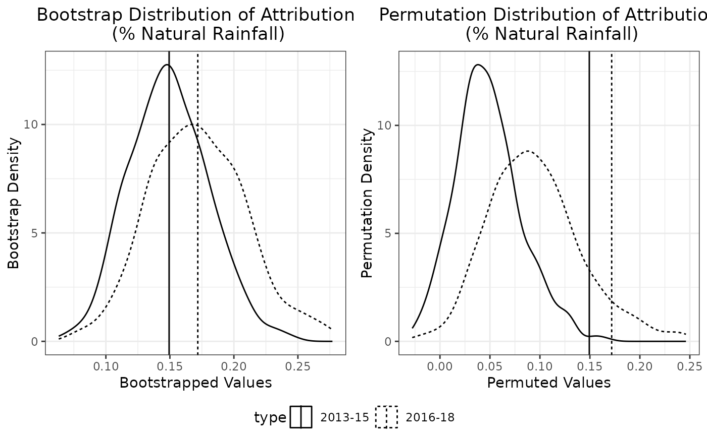
Replicating the SATE Analysis of Chambers, Ranjbar, et al. (2022)
The package can also be used to replicate the SATE analysis of Chambers, Ranjbar, et al. (2022), published in Journal of the Royal Statistical Society Series A (Statistics in Society), “Weighting, informativeness and causal inference, with an application to rainfall enhancement”.
In particular, the real data analysis presented in Section 5 can be reproduced using the code below.
jrssa = rain_attr(
data = oman,
upwind_lmm_formula = LogRain ~ Year...2014 + Year...2016 + Year...2017 + Year...2018 + Gauge.Elevation...1km + Gauge.Elevation...1km.1 + Steering.Wind.Speed + Total.Totals + PC2.Dry.Temperature + PC1.Relative.Humidity + PC1.Ground.Level.Pressure + (1|TrialDay),
instr_pred_name = 'natural_pred',
instr_pred_type = 'Unconditional',
downwind_lmm_formula = LogRain ~ Year...2013 + Year...2014 + Year...2016 + Year...2017 + Year...2018 + Gauge.Elevation...1km + Gauge.Elevation...1km.1 + natural_pred + Target.H.01 + Target.H.02 + Target.H.03 + Target.H.04 + Target.H.05 + Target.H.06 + Target.H.07 + Target.H.08 + Target.H.09 + Target.H.10 + Gauge.Elevation...1km:Target.H.01 + Gauge.Elevation...1km:Target.H.02 + + Gauge.Elevation...1km.1:Target.H.01 + Gauge.Elevation...1km.1:Target.H.02 + (1|TrialDay),
downwind_logistic_formula = (Rain.Gauge.Measurement > 0) ~ Year...2013 + Year...2014 + Year...2016 + Year...2017 + Year...2018 + Gauge.Elevation...1km + Gauge.Elevation...1km.1 + natural_pred + Target.H.01 + Target.H.02 + Target.H.03 + Target.H.04 + Target.H.05 + Target.H.06 + Target.H.07 + Target.H.08 + Target.H.09 + Target.H.10 + Gauge.Elevation...1km:Target.H.01 + Gauge.Elevation...1km:Target.H.02 + Gauge.Elevation...1km.1:Target.H.01 + Gauge.Elevation...1km.1:Target.H.02,
downwind_propensity_formula = (Gauge.Day.Type == 'Target') ~ Total.Totals + PC1.Dry.Temperature + PC1.Relative.Humidity + PC1.Ground.Level.Pressure,
rain_col_name = 'Rain.Gauge.Measurement',
upwind_subset = Gauge.Day.Type == 'Upwind' & Year!= 2013,
downwind_subset = Gauge.Day.Type %in% c('Target','Control'),
downwind_target_subset = Gauge.Day.Type == 'Target',
downwind_control_subset = Gauge.Day.Type == 'Control',
positive_subset = Rain.Gauge.Measurement > 0,
attr_type = 'ThoEtAl',
x_downwind_name = c('Year...2013' , 'Year...2014' , 'Year...2016' , 'Year...2017' , 'Year...2018', 'Gauge.Elevation...1km', 'Gauge.Elevation...1km.1', 'natural_pred'),
target_only = FALSE,
bootstrap = TRUE,
bootstrap_option = bootstrap_opt(B_bootstrap = 500,
bootstrap_type = 'REB2',
bootstrap_seed = 191,
bootstrap_parallel = TRUE,
bootstrap_parallel_num_worker = n_workers),
permutation = TRUE,
permutation_option = permutation_opt(B_permutation = 500,
permutation_seed = 19321,
permutation_parallel = TRUE,
permutation_parallel_num_worker = n_workers)
)Table 1 is identical to:
summary(jrssa$all_fitted_models$downwind_propensity_fit)
#>
#> Call:
#> glm(formula = downwind_propensity_formula, family = binomial,
#> data = downwind_positive_data)
#>
#> Coefficients:
#> Estimate Std. Error z value Pr(>|z|)
#> (Intercept) 0.753031 0.225356 3.342 0.000833 ***
#> Total.Totals -0.016308 0.005033 -3.240 0.001194 **
#> PC1.Dry.Temperature 0.171612 0.040081 4.282 1.86e-05 ***
#> PC1.Relative.Humidity 0.109929 0.024680 4.454 8.42e-06 ***
#> PC1.Ground.Level.Pressure 0.114753 0.024076 4.766 1.88e-06 ***
#> ---
#> Signif. codes: 0 '***' 0.001 '**' 0.01 '*' 0.05 '.' 0.1 ' ' 1
#>
#> (Dispersion parameter for binomial family taken to be 1)
#>
#> Null deviance: 5769.9 on 4167 degrees of freedom
#> Residual deviance: 5731.0 on 4163 degrees of freedom
#> AIC: 5741
#>
#> Number of Fisher Scoring iterations: 4Table 2 is identical to the summary table of the downwind (second-stage) LMM:
summary(jrssa)
#> Summary of Two Stage LMM Rainfall Enhancement Analysis
#> ======================================================================
#>
#> Attribution Results (Assuming Log-Rainfall being Modelled):
#> Estimate 95% Bootstrap CI Bootstrap P-Val Permutation P-Val
#> apo 6.84% (3.2052%, 10.53%) 0*** 0.01*
#> apl 7.34% (3.2402%, 11.76%) 0*** 0.01*
#> ---
#> Signif. codes: 0 '***' 0.001 '**' 0.01 '*' 0.05 '.' 0.1 ' ' 1
#>
#> SATE Results:
#> Estimate 95% Bootstrap CI Bootstrap P-Val Permutation P-Val
#> sate.mb 0.1259 (0.0639, 0.1888) 0*** 0.01*
#> sate.ipw 0.0740 (-0.0089, 0.1589) 0.04* 0.11
#> sate.ipw.l 0.1236 (0.0613, 0.186) 0*** 0.01*
#> sate.ipw.ma 0.0733 (-0.0039, 0.1548) 0.04* 0.13
#> sate.aipw 0.0758 (-0.0056, 0.163) 0.04* 0.1
#> ---
#> Signif. codes: 0 '***' 0.001 '**' 0.01 '*' 0.05 '.' 0.1 ' ' 1
#>
#>
#> ======================================================================
#>
#> Upwind (First Stage) LMM:
#> Formula:
#> LogRain ~ Year...2014 + Year...2016 + Year...2017 + Year...2018 +
#> Gauge.Elevation...1km + Gauge.Elevation...1km.1 + Steering.Wind.Speed +
#> Total.Totals + PC2.Dry.Temperature + PC1.Relative.Humidity +
#> PC1.Ground.Level.Pressure + (1 | TrialDay)
#>
#> Data subset used: oman [ Gauge.Day.Type == "Upwind" & Year != 2013 & Rain.Gauge.Measurement > 0 , ]
#> Number of observations: 1316, Number of groups: 237
#>
#> Random effects:
#> Groups Name Variance
#> TrialDay (Intercept) 0.3616803
#> Residual 1.5560159
#>
#> Fixed effects:
#> Estimate Std. Error t value
#> (Intercept) -2.0845 0.4633 -4.4987
#> Year...2014 -0.1249 0.1784 -0.7003
#> Year...2016 -0.2848 0.1809 -1.5745
#> Year...2017 -0.2850 0.1889 -1.5089
#> Year...2018 -0.3501 0.2146 -1.6310
#> Gauge.Elevation...1km 0.8657 0.1952 4.4351
#> Gauge.Elevation...1km.1 0.4223 0.0938 4.5024
#> Steering.Wind.Speed -0.0615 0.0230 -2.6746
#> Total.Totals 0.0421 0.0095 4.4317
#> PC2.Dry.Temperature 0.1190 0.0545 2.1856
#> PC1.Relative.Humidity 0.1634 0.0227 7.1913
#> PC1.Ground.Level.Pressure -0.0411 0.0207 -1.9838
#>
#> ======================================================================
#>
#> Downwind (Second Stage) LMM:
#> Formula:
#> LogRain ~ Year...2013 + Year...2014 + Year...2016 + Year...2017 +
#> Year...2018 + Gauge.Elevation...1km + Gauge.Elevation...1km.1 +
#> natural_pred + Target.H.01 + Target.H.02 + Target.H.03 +
#> Target.H.04 + Target.H.05 + Target.H.06 + Target.H.07 + Target.H.08 +
#> Target.H.09 + Target.H.10 + Gauge.Elevation...1km:Target.H.01 +
#> Gauge.Elevation...1km:Target.H.02 + +Gauge.Elevation...1km.1:Target.H.01 +
#> Gauge.Elevation...1km.1:Target.H.02 + (1 | TrialDay)
#>
#> Data subset used: oman [ Gauge.Day.Type %in% c("Target", "Control") & Rain.Gauge.Measurement > 0 , ]
#> Number of observations: 4168, Number of groups: 488
#>
#> Random effects:
#> Groups Name Variance
#> TrialDay (Intercept) 0.2251801
#> Residual 1.8529757
#>
#> Fixed effects:
#> Estimate Std. Error t value
#> (Intercept) 0.0765 0.1208 0.6332
#> Year...2013 0.4058 0.1132 3.5834
#> Year...2014 0.3357 0.1064 3.1554
#> Year...2016 0.2586 0.1153 2.2430
#> Year...2017 0.0923 0.1192 0.7743
#> Year...2018 0.0405 0.1463 0.2770
#> Gauge.Elevation...1km -0.1996 0.1640 -1.2174
#> Gauge.Elevation...1km.1 -0.0962 0.0709 -1.3577
#> natural_pred 0.9451 0.0591 15.9968
#> Target.H.01 0.4807 0.2470 1.9463
#> Target.H.02 0.8403 0.2930 2.8680
#> Target.H.03 0.2411 0.0922 2.6142
#> Target.H.04 -0.1140 0.0888 -1.2837
#> Target.H.05 0.4992 0.1317 3.7904
#> Target.H.06 -0.1364 0.1489 -0.9164
#> Target.H.07 0.3355 0.1879 1.7859
#> Target.H.08 0.1315 0.1284 1.0239
#> Target.H.09 0.7113 0.3065 2.3206
#> Target.H.10 0.1955 0.1700 1.1499
#> Gauge.Elevation...1km:Target.H.01 -0.4878 0.3634 -1.3423
#> Gauge.Elevation...1km:Target.H.02 -1.2718 0.4685 -2.7147
#> Gauge.Elevation...1km.1:Target.H.01 -0.1627 0.1585 -1.0261
#> Gauge.Elevation...1km.1:Target.H.02 -0.4583 0.1718 -2.6683Table 3 is identical to the
downwind_varcomp = varcomp(jrssa)['downwind_lmm',]
cbind(
'Var comp' = downwind_varcomp,
'Pct of total' = downwind_varcomp/sum(downwind_varcomp) * 100
)
#> Var comp Pct of total
#> TrialDay 0.2251801 10.83558
#> Residual 1.8529757 89.16442Table 4 is identical to
#Target model
summary(jrssa$all_fitted_models$downwind_positive_target_lmm_fit)$coef
#> Estimate Std. Error t value
#> (Intercept) 0.43918516 0.14679267 2.991874
#> Year...2013 0.38868713 0.14498460 2.680886
#> Year...2014 0.45385542 0.13811842 3.285988
#> Year...2016 0.34712941 0.14762617 2.351408
#> Year...2017 0.22160137 0.14688432 1.508680
#> Year...2018 0.08477673 0.18455522 0.459357
#> Gauge.Elevation...1km -0.69363326 0.19798956 -3.503383
#> Gauge.Elevation...1km.1 -0.29639368 0.08256077 -3.590006
#> natural_pred 0.94174156 0.07587026 12.412526
#Control model
summary(jrssa$all_fitted_models$downwind_positive_control_lmm_fit)$coef
#> Estimate Std. Error t value
#> (Intercept) 0.02533697 0.14694075 0.1724298
#> Year...2013 0.49063790 0.14550146 3.3720479
#> Year...2014 0.24750308 0.13488516 1.8349170
#> Year...2016 0.27650431 0.14673274 1.8844077
#> Year...2017 0.09564666 0.15260033 0.6267789
#> Year...2018 0.09708881 0.19122863 0.5077106
#> Gauge.Elevation...1km -0.06618146 0.20372709 -0.3248535
#> Gauge.Elevation...1km.1 -0.06163347 0.08778100 -0.7021277
#> natural_pred 0.90292193 0.07879799 11.4586928Table 5 is identical to:
downwind_target_varcomp = varcomp(jrssa)['downwind_target_lmm',]
downwind_control_varcomp = varcomp(jrssa)['downwind_control_lmm',]
#Target model
cbind(
'Var comp' = downwind_target_varcomp,
'Pct of total' = downwind_target_varcomp/sum(downwind_target_varcomp) * 100
)
#> Var comp Pct of total
#> TrialDay 0.2965226 13.96288
#> Residual 1.8271261 86.03712
#Control model
cbind(
'Var comp' = downwind_control_varcomp,
'Pct of total' = downwind_control_varcomp/sum(downwind_control_varcomp) * 100
)
#> Var comp Pct of total
#> TrialDay 0.281269 13.65164
#> Residual 1.779063 86.34836The following attempts to replicate the lower panel of Table 6
corresponding to LogRain. Firstly, the point estimate of
SATEs in the first row are exactly the same as those in Table 6, except
for AIPW due to the presence of a coding error in the original
implemention which has now been corrected in this package. The remaining
rows are close to, but not exactly the same as, those in Table 6 due to
the inherent randomness of the bootstrap procedure and a smaller number
of bootstrap replicates used here
(bootstrap_opt(B_bootstrap = 500)) to reduce computational
time.
table6_jrssa_lograin = rbind(
c(jrssa$hatsate$sate.ipw, jrssa$hatsate$sate.ipw.ma, jrssa$hatsate$sate.aipw, jrssa$hatsate$sate.ipw.l, jrssa$hatsate$sate.mb),
apply(jrssa$bootstrap_result$hatsate[,c('sate.ipw','sate.ipw.ma','sate.aipw','sate.ipw.l','sate.mb')], 2, function(x){
c(sd(x), mean(x < 0), quantile(x, probs = c(0.001, 0.005, 0.025, 0.5, 0.975, 0.995, 0.999)) )
})
)
rownames(table6_jrssa_lograin) = c('Estimate', 'Std Dev' , 'Pr < 0', '0.1%', '0.5%', '2.5%', '50%', '97.5%', '99.5%', '99.9%')
colnames(table6_jrssa_lograin) = c('IPW', 'IPW-MA', 'AIPW', 'IPW-L', 'MB')
table6_jrssa_lograin
#> IPW IPW-MA AIPW IPW-L MB
#> Estimate 0.074018677 0.073275639 0.075839429 0.12362512 0.12594039
#> Std Dev 0.042266109 0.041350970 0.042715863 0.03208145 0.03210279
#> Pr < 0 0.040000000 0.038000000 0.038000000 0.00000000 0.00000000
#> 0.1% -0.048534736 -0.040442435 -0.049354912 0.02432771 0.02662306
#> 0.5% -0.030866087 -0.025504676 -0.030503169 0.04755856 0.04973812
#> 2.5% -0.008860096 -0.003942739 -0.005590821 0.06132309 0.06388347
#> 50% 0.073431789 0.074376326 0.074798596 0.12429946 0.12635743
#> 97.5% 0.158946827 0.154820201 0.162956335 0.18598148 0.18875737
#> 99.5% 0.193719116 0.183986697 0.196055339 0.19986492 0.20251495
#> 99.9% 0.216288800 0.209864338 0.217144181 0.20163745 0.20482817The following attempts to replicate the plot associated with
LogRain in Figure 5:
bootstrap_df_jrssa = rbind(
data.frame(
sate = jrssa$bootstrap_result$hatsate[,'sate.ipw'],
type = 'IPW'
),
data.frame(
sate = jrssa$bootstrap_result$hatsate[,'sate.ipw.ma'],
type = 'IPW-MA'
),
data.frame(
sate = jrssa$bootstrap_result$hatsate[,'sate.ipw.l'],
type = 'IPW-L'
)
)
ori_df_jrssa = rbind(
data.frame(
sate = jrssa$hatsate$sate.ipw,
type = 'IPW'
),
data.frame(
sate = jrssa$hatsate$sate.ipw.ma,
type = 'IPW-MA'
),
data.frame(
sate = jrssa$hatsate$sate.ipw.l,
type = 'IPW-L'
)
)
fig5_jrssa_lograin = ggplot2::ggplot() +
ggplot2::geom_density(data = bootstrap_df_jrssa, ggplot2::aes(x = sate, linetype = type)) +
ggplot2::geom_vline(data = ori_df_jrssa, ggplot2::aes(xintercept = sate, linetype = type)) +
ggplot2::ggtitle('Bootstrap Distribution of SATE') +
ggplot2::xlab('Bootstrapped Values') +
ggplot2::ylab('Bootstrap Density') +
ggplot2::theme_bw() + ggplot2::theme(plot.title = ggplot2::element_text(hjust = 0.5), legend.position = 'bottom')
fig5_jrssa_lograin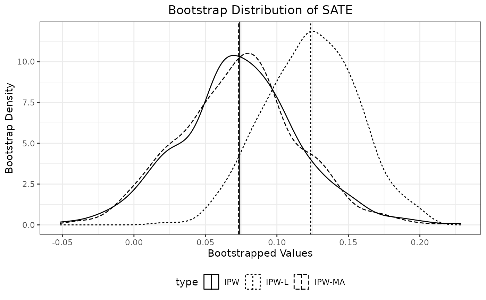
The following attempts to replicate Table 7, with some differences
due to the inherent randomness of permutation procedure and the smaller
number of permutation replicates
(permutation_opt(B_permutation = 500)), as well as a coding
error in the original implementation of the AIPW estimator which has
been corrected in this package:
table7_jrssa_lograin = jrssa$permutation_p_value_result$hatsate[c('sate.ipw','sate.ipw.ma','sate.aipw','sate.ipw.l','sate.mb')]
names(table7_jrssa_lograin) = c('IPW', 'IPW-MA', 'AIPW', 'IPW-L', 'MB')
table7_jrssa_lograin
#> IPW IPW-MA AIPW IPW-L MB
#> 0.114 0.134 0.100 0.012 0.012The following attempts to replicate the plot associated with
LogRain in Figure 6:
permutation_df_jrssa = rbind(
data.frame(
sate = jrssa$permutation_result$hatsate[,'sate.ipw'],
type = 'IPW'
),
data.frame(
sate = jrssa$permutation_result$hatsate[,'sate.ipw.ma'],
type = 'IPW-MA'
),
data.frame(
sate = jrssa$permutation_result$hatsate[,'sate.ipw.l'],
type = 'IPW-L'
)
)
ori_df_jrssa = rbind(
data.frame(
sate = jrssa$hatsate$sate.ipw,
type = 'IPW'
),
data.frame(
sate = jrssa$hatsate$sate.ipw.ma,
type = 'IPW-MA'
),
data.frame(
sate = jrssa$hatsate$sate.ipw.l,
type = 'IPW-L'
)
)
fig6_jrssa_lograin = ggplot2::ggplot() +
ggplot2::geom_density(data = permutation_df_jrssa, ggplot2::aes(x = sate, linetype = type)) +
ggplot2::geom_vline(data = ori_df_jrssa, ggplot2::aes(xintercept = sate, linetype = type)) +
ggplot2::ggtitle('Permutation Distribution of SATE') +
ggplot2::xlab('Permuted Values') +
ggplot2::ylab('Permutation Density') +
ggplot2::theme_bw() + ggplot2::theme(plot.title = ggplot2::element_text(hjust = 0.5), legend.position = 'bottom')
fig6_jrssa_lograin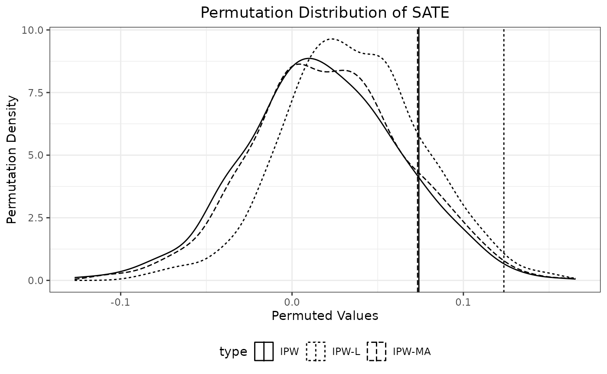